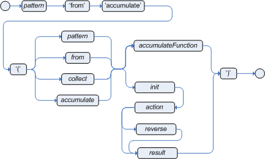

Rule Language Reference
Drools Rule Language (DRL)
Drools Rule Language (DRL) is a notation established by the Drools open source business automation project for defining and describing business rules. You define DRL rules in .drl text files. A DRL file can contain one or more rules that define at a minimum the rule conditions (when) and actions (then).
DRL files consist of the following components:
package
unit
import
declare // Optional
query // Optional
rule "rule name"
// Attributes
when
// Conditions
then
// Actions
end
rule "rule2 name"
...The following example DRL rule determines the age limit in a loan application decision service:
rule "Underage"
when
/applicants[ applicantName : name, age < 21 ]
$application : /loanApplications[ applicant == applicantName ]
then
$application.setApproved( false );
$application.setExplanation( "Underage" );
update($application);
endA DRL file can contain single or multiple rules and queries, and can define resource declarations and attributes that are assigned and used by your rules and queries. The components in a DRL file are grouped in a defined rule unit that serves as a unique namespace for each group of rules. The DRL package followed by the rule unit definition must be listed at the top of a DRL file, and the rules are typically listed last. All other DRL components can follow any order.
Each rule must have a unique name within the rule unit. If you use the same rule name more than once in any DRL file in the unit, the rules fail to compile. Rule names generally must follow standard Java identifier conventions. However, you can enclose rule names with double quotation marks (rule "rule name") to prevent possible compilation errors, especially if you use spaces in rule names.
New and traditional syntax
In Drools 10, we promote a new DRL syntax based on rule unit, data source, and OOPath. Hence, you will see such a new syntax in DRL syntax examples. However, Drools 10 still fully supports traditional DRL syntax that has been used in prior versions.
rule "Underage"
when
Applicant( applicantName : name, age < 21 )
$application : LoanApplication( applicant == applicantName )
then
$application.setApproved( false );
$application.setExplanation( "Underage" );
update($application);
endFor the traditional syntax, please refer to [ref-con-drl_drl-rules-traditional]
Packages in DRL
A package is a folder of related assets in Drools, such as data objects, DRL files, decision tables, and other asset types. A package also serves as a unique namespace for each group of rules. A single rule base can contain multiple packages. You typically store all the rules for a package in the same file as the package declaration so that the package is self-contained. However, you can import objects from other packages that you want to use in the rules.
The following example is a package name and namespace for a DRL file in a mortgage application decision service:
package org.mortgages;The following railroad diagram shows all the components that may make up a package:
Note that a package must have a namespace and be declared using standard Java conventions for package names; i.e., no spaces, unlike rule names which allow spaces.
In terms of the order of elements, they can appear in any order in the rule file, with the exception of the package and unit statements, which must be at the top of the file.
In all cases, the semicolons are optional.
Notice that any rule attribute (as described in the section Rule attributes in DRL) may also be written at package level, superseding the attribute’s default value. The modified default may still be replaced by an attribute setting within a rule.
Rule units in DRL
Rule Unit API is explained in Rule Unit API. This section focuses on how to use rule units in DRL.
The following example is a rule unit designated in a DRL file in a mortgage application decision service:
package org.mortgages;
unit MortgageRules;To define a rule unit, you need to write a Java class that implements RuleUnitData as written in Rule Unit API. Alternatively, you can declare the rule unit by implementing the RuleUnitData interface directly in DRL:
package org.mortgages;
unit MortgageRules;
import org.drools.ruleunits.api.RuleUnitData;
import org.drools.ruleunits.api.DataStream;
declare Person
name : String
dateOfBirth : Date
address : Address
end
declare MortgageRules extends RuleUnitData
persons: DataStream<Person>
end
rule "Using a rule unit with a declared type"
when
$p : /persons[ name == "James" ]
then // Insert Mark, who is a customer of James.
Person mark = new Person();
mark.setName( "Mark" );
persons.append( mark );
end|
If you declare a rule unit in DRL, the rule unit class will be generated by Drools at build time. It means that you can’t refer to the class in your client codes. Declared rule units are only useful when the client is also auto-generated, for example, REST endpoint generation by Drools-Quarkus integration. |
To separate the fact types from the rule unit for use with other DRL rules, you can declare the types in a separate DRL file and then use the DRL rule file to declare the data sources by using the RuleUnitData interface implementation:
package org.mortgages;
declare Person
name : String
dateOfBirth : Date
address : Address
endpackage org.mortgages;
unit MortgageRules;
import org.drools.ruleunits.api.RuleUnitData;
import org.drools.ruleunits.api.DataStream;
declare MortgageRules extends RuleUnitData
persons: DataStream<Person>
end
rule "Using a rule unit with a declared type"
when
$p : /persons[ name == "James" ]
then // Insert Mark, who is a customer of James.
Person mark = new Person();
mark.setName( "Mark" );
persons.append( mark );
endIn this example, persons is a DataStream data source for facts of type Person. Data sources are typed sources of data that rule units can subscribe to for updates. You interact with the rule unit through the data sources it exposes. A data source can be a DataStream source for append-only storage, a DataStore source for writable storage to add or remove data, or a SingletonStore source for writable storage to set and clear a single element.
As part of your data source declaration, you also import org.drools.ruleunits.api.RuleUnitData and the relevant data source support, such as import org.drools.ruleunits.api.DataStream in this example.
You can add several rules to the same DRL file, or further break down the rule set and type declarations by creating more files. However you construct your rule sets, ensure that all DRL rule files exist in the same directory and start with the correct package and unit declarations.
Rule unit use case
As an additional rule unit use case, consider the following example decision service that evaluates incoming data from a heat sensor for temperature measurements and produces alerts when the temperature is above a specified threshold.
This example service uses the following types.drl file in the src/main/resources/org/acme folder of the Drools project to declare the Temperature and the Alert fact types:
package com.acme;
declare Temperature
value: double
end
declare Alert
severity: String
message: String
endTo define DRL rules that pattern-match against Temperature values, the example service must expose an entry point for the incoming data to the Drools rule engine and publish alerts on a separate channel. To establish this data source for decision data, the example service uses a rule unit with DataStream data sources for Temperature objects and for Alert objects.
The DataStream data source is an append-only store for incoming data, similar to a queue. This type of data source is logical for both sources in this example because the temperature data is coming from an external source (the sensor) and the service publishes the alerts externally as they are produced.
The example service uses the following MonitoringService.drl file in the same src/main/resources/com/acme folder of the Drools project to declare the data sources for the fact types and defines the rules for the rule unit:
package com.acme;
unit MonitoringService;
import org.drools.ruleunits.api.RuleUnitData;
import org.drools.ruleunits.api.DataStream;
declare MonitoringService extends RuleUnitData
temperatures: DataStream<Temperature>
alertData: DataStream<Alert>
end
rule "tooHot"
when
$temp : /temperatures[value >= 80]
then
alertData.append(new Alert("HIGH", "Temperature exceeds threshold: " + temp.value));
endThe rule unit implements the required RuleUnitData interface and declares the data sources for the previously defined types. The sample rule raises an alert when the temperature reaches or exceeds 80 degrees.
Import statements in DRL

Similar to import statements in Java, imports in DRL files identify the fully qualified paths and type names for any objects that you want to use in the rules. You specify the package and data object in the format packageName.objectName, with multiple imports on separate lines. The Drools rule engine automatically imports classes from the Java package with the same name as the DRL package and from the package java.lang.
The following example is an import statement for a loan application object in a mortgage application decision service:
import org.mortgages.LoanApplication;Type declarations and metadata in DRL


Declarations in DRL files define new fact types or metadata for fact types to be used by rules in the DRL file:
-
New fact types: The default fact type in the
java.langpackage of Drools isObject, but you can declare other types in DRL files as needed. Declaring fact types in DRL files enables you to define a new fact model directly in the Drools rule engine, without creating models in a lower-level language like Java. You can also declare a new type when a domain model is already built and you want to complement this model with additional entities that are used mainly during the reasoning process. -
Metadata for fact types: You can associate metadata in the format
@KEY( VALUE )with new or existing facts. Metadata can be any kind of data that is not represented by the fact attributes and is consistent among all instances of that fact type. The metadata can be queried at run time by the Drools rule engine and used in the reasoning process.
Type declarations without metadata in DRL
A declaration of a new fact does not require any metadata, but must include a list of attributes or fields. If a type declaration does not include identifying attributes, the Drools rule engine searches for an existing fact class in the classpath and raises an error if the class is missing.
For example, the following DRL file contains a declaration of a new fact type Person from a persons data source and uses no metadata:
declare Person
name : String
dateOfBirth : java.util.Date
address : Address
end
rule "Using a declared type"
when
$p : /persons[ name == "James" ]
then // Insert Mark, who is a customer of James.
Person mark = new Person();
mark.setName( "Mark" );
persons.append( mark );
endIn this example, the new fact type Person has the three attributes name, dateOfBirth, and address. Each attribute has a type that can be any valid Java type, including another class that you create or a fact type that you previously declared. The dateOfBirth attribute has the type java.util.Date, from the Java API, and the address attribute has the previously defined fact type Address.
To avoid writing the fully qualified name of a class every time you declare it, you can define the full class name as part of the import clause:
import java.util.Date
declare Person
name : String
dateOfBirth : Date
address : Address
endWhen you declare a new fact type, the Drools rule engine generates at compile time a Java class representing the fact type. The generated Java class is a one-to-one JavaBeans mapping of the type definition.
For example, the following Java class is generated from the example Person type declaration:
public class Person implements Serializable {
private String name;
private java.util.Date dateOfBirth;
private Address address;
// Empty constructor
public Person() {...}
// Constructor with all fields
public Person( String name, Date dateOfBirth, Address address ) {...}
// If keys are defined, constructor with keys
public Person( ...keys... ) {...}
// Getters and setters
// `equals` and `hashCode`
// `toString`
}You can then use the generated class in your rules like any other fact, as illustrated in the previous rule example with the Person type declaration from a persons data source:
rule "Using a declared type"
when
$p : /persons[ name == "James" ]
then // Insert Mark, who is a customer of James.
Person mark = new Person();
mark.setName( "Mark" );
persons.append( mark );
endEnumerative type declarations in DRL
DRL supports the declaration of enumerative types in the format declare enum FACT_TYPE, followed by a comma-separated list of values ending with a semicolon. You can then use the enumerative list in the rules in the DRL file.
For example, the following enumerative type declaration defines days of the week for an employee scheduling rule:
declare enum DaysOfWeek
SUN("Sunday"),MON("Monday"),TUE("Tuesday"),WED("Wednesday"),THU("Thursday"),FRI("Friday"),SAT("Saturday");
fullName : String
end
rule "Using a declared Enum"
when
$emp : /employees[ dayOff == DaysOfWeek.MON ]
then
...
endExtended type declarations in DRL
DRL supports type declaration inheritance in the format declare FACT_TYPE_1 extends FACT_TYPE_2. To extend a type declared in Java by a subtype declared in DRL, you repeat the parent type in a declaration statement without any fields.
For example, the following type declarations extend a Student type from a top-level Person type, and a LongTermStudent type from the Student subtype:
import org.people.Person
declare Person end
declare Student extends Person
school : String
end
declare LongTermStudent extends Student
years : int
course : String
endType declarations with metadata in DRL
You can associate metadata in the format @KEY( VALUE ) (the value is optional) with fact types or fact attributes. Metadata can be any kind of data that is not represented by the fact attributes and is consistent among all instances of that fact type. The metadata can be queried at run time by the Drools rule engine and used in the reasoning process. Any metadata that you declare before the attributes of a fact type are assigned to the fact type, while metadata that you declare after an attribute are assigned to that particular attribute.
In the following example, the two metadata attributes @author and @dateOfCreation are declared for the Person fact type, and the two metadata items @key (literal) and @maxLength are declared for the name attribute. The @key literal metadata attribute has no required value, so the parentheses and the value are omitted.
import java.util.Date
declare Person
@author( Bob )
@dateOfCreation( 01-Feb-2009 )
name : String @key @maxLength( 30 )
dateOfBirth : Date
address : Address
endFor declarations of metadata attributes for existing types, you can identify the fully qualified class name as part of the import clause for all declarations or as part of the individual declare clause:
import org.drools.examples.Person
declare Person
@author( Bob )
@dateOfCreation( 01-Feb-2009 )
enddeclare org.drools.examples.Person
@author( Bob )
@dateOfCreation( 01-Feb-2009 )
endMetadata tags for fact type and attribute declarations in DRL
Although you can define custom metadata attributes in DRL declarations, the Drools rule engine also supports the following predefined metadata tags for declarations of fact types or fact type attributes.
|
The examples in this section that refer to the VoiceCall fact class in an example Telecom domain model
|
- @role
-
This tag determines whether a given fact type is handled as a regular fact or an event in the Drools rule engine during complex event processing.
Default parameter:
factSupported parameters:
fact,event@role( fact | event )Example: Declare VoiceCall as event typedeclare VoiceCall @role( event ) end - @timestamp
-
This tag is automatically assigned to every event in the Drools rule engine. By default, the time is provided by the session clock and assigned to the event when it is inserted into the working memory of the Drools rule engine. You can specify a custom time stamp attribute instead of the default time stamp added by the session clock.
Default parameter: The time added by the Drools rule engine session clock
Supported parameters: Session clock time or custom time stamp attribute
@timestamp( ATTRIBUTE_NAME )Example: Declare VoiceCall timestamp attributedeclare VoiceCall @role( event ) @timestamp( callDateTime ) end - @duration
-
This tag determines the duration time for events in the Drools rule engine. Events can be interval-based events or point-in-time events. Interval-based events have a duration time and persist in the working memory of the Drools rule engine until their duration time has lapsed. Point-in-time events have no duration and are essentially interval-based events with a duration of zero. By default, every event in the Drools rule engine has a duration of zero. You can specify a custom duration attribute instead of the default.
Default parameter: Null (zero)
Supported parameters: Custom duration attribute
@duration( ATTRIBUTE_NAME )Example: Declare VoiceCall duration attributedeclare VoiceCall @role( event ) @timestamp( callDateTime ) @duration( callDuration ) end - @expires
-
This tag determines the time duration before an event expires in the working memory of the Drools rule engine. By default, an event expires when the event can no longer match and activate any of the current rules. You can define an amount of time after which an event should expire. This tag definition also overrides the implicit expiration offset calculated from temporal constraints and sliding windows in the KIE base. This tag is available only when the Drools rule engine is running in stream mode.
Default parameter: Null (event expires after event can no longer match and activate rules)
Supported parameters: Custom
timeOffsetattribute in the format[#d][#h][#m][#s][#ms]@expires( TIME_OFFSET )Example: Declare expiration offset for VoiceCall eventsdeclare VoiceCall @role( event ) @timestamp( callDateTime ) @duration( callDuration ) @expires( 1h35m ) end - @typesafe
-
This tab determines whether a given fact type is compiled with or without type safety. By default, all type declarations are compiled with type safety enabled. You can override this behavior to type-unsafe evaluation, where all constraints are generated as MVEL constraints and executed dynamically. This is useful when dealing with collections that do not have any generics or mixed type collections.
Default parameter:
trueSupported parameters:
true,false@typesafe( BOOLEAN )Example: Declare VoiceCall for type-unsafe evaluationdeclare VoiceCall @role( fact ) @typesafe( false ) end - @serialVersionUID
-
This tag defines an identifying
serialVersionUIDvalue for a serializable class in a fact declaration. If a serializable class does not explicitly declare aserialVersionUID, the serialization run time calculates a defaultserialVersionUIDvalue for that class based on various aspects of the class, as described in the Java Object Serialization Specification. However, for optimal deserialization results and for greater compatibility with serialized KIE sessions, set theserialVersionUIDas needed in the relevant class or in your DRL declarations.Default parameter: Null
Supported parameters: Custom
serialVersionUIDinteger@serialVersionUID( INTEGER )Example: Declare serialVersionUID for a VoiceCall classdeclare VoiceCall @serialVersionUID( 42 ) end - @key
-
This tag enables a fact type attribute to be used as a key identifier for the fact type. The generated class can then implement the
equals()andhashCode()methods to determine if two instances of the type are equal to each other. The Drools rule engine can also generate a constructor using all the key attributes as parameters.Default parameter: None
Supported parameters: None
ATTRIBUTE_DEFINITION @keyExample: Declare Person type attributes as keysdeclare Person firstName : String @key lastName : String @key age : int endFor this example, the Drools rule engine checks the
firstNameandlastNameattributes to determine if two instances ofPersonare equal to each other, but it does not check theageattribute. The Drools rule engine also implicitly generates three constructors: one without parameters, one with the@keyfields, and one with all fields:Example constructors from the key declarationsPerson() // Empty constructor Person( String firstName, String lastName ) Person( String firstName, String lastName, int age )You can then create instances of the type based on the key constructors, as shown in the following example:
Example instance using the key constructorPerson person = new Person( "John", "Doe" );
Queries in DRL

Queries in DRL files search the working memory of the Drools rule engine for facts related to the rules in the DRL file. You add the query definitions in DRL files and then obtain the matching results in your application code. Queries search for a set of defined conditions and do not require when or then specifications. Query names are scoped to the rule unit, so each query name must be unique within the same rule unit. In Drools, queries are automatically exposed as REST endpoints.
The following example is a query definition for an Alert object with a severity field set to HIGH:
package com.acme;
unit MonitoringService;
query highSeverity
alerts : /alertData[ severity == "HIGH" ]
endDrools automatically exposes this query through an endpoint /high-severity.
For this example, assume that the MonitoringService rule unit class has the following form:
package com.acme;
import org.drools.ruleunits.api.DataSource;
import org.drools.ruleunits.api.DataStream;
public class MonitoringService implements RuleUnitData {
private DataStream<Temperature> temperature = DataSource.createStream();
private DataStream<Alert> alertData = DataSource.createStream();
public DataStream<Temperature> getTemperature() { return temperature; }
public DataStream<Alert> getAlertData() { return alertData; }
}In this case, you can invoke the query using the following command:
/high-severity endpoint$ curl -X POST \
-H 'Accept: application/json' \
-H 'Content-Type: application/json' \
-d '{ "eventData": [ { "type": "temperature", "value" : 20 }, { "type": "temperature", "value" : 100 } ] }' \
http://localhost:8080/high-severity{
"alerts" : [
{
"severity" : "HIGH",
"message" : "Temperature exceeds threshold: 100"
}
]
}This example submits the data to the eventData data source and returns the result of the highSeverity query as a response.
Rule attributes in DRL
Rule attributes are additional specifications that you can add to business rules to modify rule behavior. In DRL files, you typically define rule attributes above the rule conditions and actions, with multiple attributes on separate lines, in the following format:
rule "rule_name"
// Attribute
// Attribute
when
// Conditions
then
// Actions
endThe following table lists the names and supported values of the attributes that you can assign to rules:
| Attribute | Value |
|---|---|
|
An integer defining the priority of the rule. Rules with a higher salience value are given higher priority when ordered in the internalMatch queue. Example: |
|
A Boolean value. When the option is selected, the rule is enabled. When the option is not selected, the rule is disabled. Example: |
|
A string containing a date and time definition. The rule can be activated only if the current date and time is after a Example: |
|
A string containing a date and time definition. The rule cannot be activated if the current date and time is after the Example: |
|
A Boolean value. When the option is selected, the rule cannot be reactivated (looped) if a consequence of the rule re-triggers a previously met condition. When the condition is not selected, the rule can be looped in these circumstances. Example: |
|
A string identifying an internalMatch (or XOR) group to which you want to assign the rule. In internalMatch groups, only one rule can be activated. The first rule to fire will cancel all pending internalMatches of all rules in the internalMatch group. Example: |
|
A long integer value defining the duration of time in milliseconds after which the rule can be activated, if the rule conditions are still met. Example: |
|
A string identifying either Example: |
|
A Quartz calendar definition for scheduling the rule. Example: |
|
A Boolean value, applicable only to rules within agenda groups. When the option is selected, the next time the rule is activated, a focus is automatically given to the agenda group to which the rule is assigned. Example: |
|
A Boolean value, applicable only to rules within rule flow groups or agenda groups. When the option is selected, the next time the ruleflow group for the rule becomes active or the agenda group for the rule receives a focus, the rule cannot be activated again until the ruleflow group is no longer active or the agenda group loses the focus. This is a stronger version of the Example: |
|
A string identifying either Example: |
Timer and calendar rule attributes in DRL
Timers and calendars are DRL rule attributes that enable you to apply scheduling and timing constraints to your DRL rules. These attributes require additional configurations depending on the use case.
The timer attribute in DRL rules is a string identifying either int (interval) or cron timer definitions for scheduling a rule and supports the following formats:
timer ( int: __INITIAL_DELAY__ __REPEAT_INTERVAL__ )
timer ( cron: __CRON_EXPRESSION__ )// Run after a 30-second delay
timer ( int: 30s )
// Run every 5 minutes after a 30-second delay each time
timer ( int: 30s 5m )// Run every 15 minutes
timer ( cron:* 0/15 * * * ? )Interval timers follow the semantics of java.util.Timer objects, with an initial delay and an optional repeat interval. Cron timers follow standard Unix cron expressions.
The following example DRL rule uses a cron timer to send an SMS text message every 15 minutes:
rule "Send SMS message every 15 minutes"
timer ( cron:* 0/15 * * * ? )
when
$a : Alarm( on == true )
then
channels[ "sms" ].insert( new Sms( $a.mobileNumber, "The alarm is still on." );
endGenerally, a rule that is controlled by a timer becomes active when the rule is triggered and the rule consequence is executed repeatedly, according to the timer settings. The execution stops when the rule condition no longer matches incoming facts. However, the way the Drools rule engine handles rules with timers depends on whether the Drools rule engine is in active mode or in passive mode.
By default, the Drools rule engine runs in passive mode and evaluates rules, according to the defined timer settings, when a user or an application explicitly calls fireAllRules(). Conversely, if a user or application calls fireUntilHalt(), the Drools rule engine starts in active mode and evaluates rules continually until the user or application explicitly calls halt().
When the Drools rule engine is in active mode, rule consequences are executed even after control returns from a call to fireUntilHalt() and the Drools rule engine remains reactive to any changes made to the working memory. For example, removing a fact that was involved in triggering the timer rule execution causes the repeated execution to terminate, and inserting a fact so that some rule matches causes that rule to be executed. However, the Drools rule engine is not continually active, but is active only after a rule is executed. Therefore, the Drools rule engine does not react to asynchronous fact insertions until the next execution of a timer-controlled rule. Disposing a KIE session terminates all timer activity.
When the Drools rule engine is in passive mode, rule consequences of timed rules are evaluated only when fireAllRules() is invoked again. However, you can change the default timer-execution behavior in passive mode by configuring the KIE session with a TimedRuleExecutionOption option, as shown in the following example:
KieSessionConfiguration ksconf = KieServices.Factory.get().newKieSessionConfiguration();
ksconf.setOption( TimedRuleExecutionOption.YES );
KSession ksession = kbase.newKieSession(ksconf, null);You can additionally set a FILTERED specification on the TimedRuleExecutionOption option that enables you to define a
callback to filter those rules, as shown in the following example:
KieSessionConfiguration ksconf = KieServices.Factory.get().newKieSessionConfiguration();
conf.setOption( new TimedRuleExecutionOption.FILTERED(new TimedRuleExecutionFilter() {
public boolean accept(Rule[] rules) {
return rules[0].getName().equals("MyRule");
}
}) );For interval timers, you can also use an expression timer with expr instead of int to define both the delay and interval as an expression instead of a fixed value.
The following example DRL file declares a fact type with a delay and period that are then used in the subsequent rule with an expression timer:
declare Bean
delay : String = "30s"
period : long = 60000
end
rule "Expression timer"
timer ( expr: $d, $p )
when
Bean( $d : delay, $p : period )
then
// Actions
endThe expressions, such as $d and $p in this example, can use any variable defined in the pattern-matching part of the rule. The variable can be any String value that can be parsed into a time duration or any numeric value that is internally converted in a long value for a duration in milliseconds.
Both interval and expression timers can use the following optional parameters:
-
startandend: ADateor aStringrepresenting aDateor alongvalue. The value can also be aNumberthat is transformed into a JavaDatein the formatnew Date( ((Number) n).longValue() ). -
repeat-limit: An integer that defines the maximum number of repetitions allowed by the timer. If both theendand therepeat-limitparameters are set, the timer stops when the first of the two is reached.
start, end, and repeat-limit parameterstimer (int: 30s 1h; start=3-JAN-2020, end=4-JAN-2020, repeat-limit=50)In this example, the rule is scheduled for every hour, after a delay of 30 seconds each hour, beginning on 3 January 2020 and ending either on 4 January 2020 or when the cycle repeats 50 times.
If the system is paused (for example, the session is serialized and then later deserialized), the rule is scheduled only one time to recover from missing internalMatches regardless of how many internalMatches were missed during the pause, and then the rule is subsequently scheduled again to continue in sync with the timer setting.
The calendar attribute in DRL rules is a Quartz calendar definition for scheduling a rule and supports the following format:
calendars "DEFINITION_OR_REGISTERED_NAME"// Exclude non-business hours
calendars "* * 0-7,18-23 ? * *"
// Weekdays only, as registered in the KIE session
calendars "weekday"You can adapt a Quartz calendar based on the Quartz calendar API and then register the calendar in the KIE session, as shown in the following example:
Calendar weekDayCal = QuartzHelper.quartzCalendarAdapter(org.quartz.Calendar quartzCal)ksession.getCalendars().set( "weekday", weekDayCal );You can use calendars with standard rules and with rules that use timers. The calendar attribute can contain one or more comma-separated calendar names written as String literals.
The following example rules use both calendars and timers to schedule the rules:
rule "Weekdays are high priority"
calendars "weekday"
timer ( int:0 1h )
when
Alarm()
then
send( "priority high - we have an alarm" );
end
rule "Weekends are low priority"
calendars "weekend"
timer ( int:0 4h )
when
Alarm()
then
send( "priority low - we have an alarm" );
endRule conditions in DRL


The when part of a DRL rule (also known as the Left Hand Side (LHS) of the rule) contains the conditions that must be met to execute an action. Conditions consist of a series of stated OOPath expressions of patterns and constraints, with optional bindings and supported rule condition elements (keywords), based on the available data objects in the package. OOPath is an object-oriented syntax extension to XPath for navigating through related elements while handling collections and filtering constraints.
For example, in a decision service that raises alerts when the temperature reaches or exceeds 80 degrees, a rule tooHot contains the when condition /temperature[value >= 80].
DRL uses when instead of if because if is typically part of a procedural execution flow during which a condition is checked at a specific point in time. In contrast, when indicates that the condition evaluation is not limited to a specific evaluation sequence or point in time, but instead occurs continually at any time. Whenever the condition is met, the actions are executed.
|
If the when section is empty, then the conditions are considered to be true and the actions in the then section are executed the first time the rules are fired. This is useful if you want to use rules to set up the Drools rule engine state.
The following example rule uses empty conditions to insert a fact every time the rule is executed:
rule "start-up"
when
// Empty
then // Actions to be executed once
alerts.add( new Alert("INFO", "System started") );
endFormally, the core grammar of an OOPath expression is defined in extended Backus-Naur form (EBNF) notation in the following way:
OOPExpr = [ID ( ":" | ":=" )] ( "/" | "?/" ) OOPSegment { ( "/" | "?/" | "." ) OOPSegment } ;
OOPSegment = ID ["#" ID] ["[" ( Number | Constraints ) "]"]OOPath expressions and constraints
An OOPath expression of a pattern in a DRL rule condition is the segment to be matched by the Drools rule engine. An OOPath expression can potentially match each fact that is inserted into the working memory of the Drools rule engine. It can also contain constraints to further define the facts to be matched.
In the simplest form, with no constraints, an OOPath expression matches a fact in the given data source. In the following example with a DataSource<Person> named persons, the expression matches against all Person objects in the data source of the Drools rule engine:
/personsPatterns can also refer to superclasses or even interfaces, potentially matching facts from many different classes. For example, the following pattern matches all Student subtypes of the Person object:
/persons # StudentSquare brackets in a pattern enclose the constraints, such as the following constraint on the person’s age:
/persons[ age == 50 ]A constraint is an expression that returns true or false. Constraints in DRL are essentially Java expressions with some enhancements, such as property access, and some differences, such as equals() and !equals() semantics for == and != (instead of the usual same and not same semantics).
Any JavaBeans property can be accessed directly from pattern constraints. A JavaBeans property is exposed internally using a standard JavaBeans getter that takes no arguments and returns something. For example, the age property is written as age in DRL instead of the getter getAge():
/persons[ age == 50 ]
// This is equivalent to the following getter format:
/persons[ getAge() == 50 ]Drools uses the standard JDK Introspector class to achieve this mapping and follows the standard JavaBeans specification. For optimal Drools rule engine performance, use the property access format, such as age, instead of using getters explicitly, such as getAge().
|
Do not use property accessors to change the state of the object in a way that might affect the rules because the Drools rule engine caches the results of the match between invocations for higher efficiency. For example, do not use property accessors in the following ways: Instead of following the second example, insert a fact that wraps the current date in the working memory and update that fact between rule executions as needed. |
However, if the getter of a property cannot be found, the compiler uses the property name as a fallback method name, without arguments:
/persons[ age == 50 ]
// If `Person.getAge()` does not exist, the compiler uses the following syntax:
/persons[ age() == 50 ]You can also nest access properties in patterns, as shown in the following example. Nested properties are indexed by the Drools rule engine.
/persons[ address.houseNumber == 50 ]
// This is equivalent to the following expression:
/persons[ getAddress().getHouseNumber() == 50 ]You can use any Java expression that returns a boolean value as a constraint inside the parentheses of a pattern. Java expressions can be mixed with other expression enhancements, such as property access:
/persons[ age == 50 ]You can change the evaluation priority by using parentheses, as in any logical or mathematical expression:
/persons[ age > 100 && ( age % 10 == 0 ) ]You can also reuse Java methods in constraints, as shown in the following example:
/persons[ Math.round( weight / ( height * height ) ) < 25.0 ]|
Do not use constraints to change the state of the object in a way that might affect the rules because the Drools rule engine caches the results of the match between invocations for higher efficiency. Any method that is executed on a fact in the rule conditions must be a read-only method. Also, the state of a fact should not change between rule invocations unless those facts are marked as updated in the working memory on every change. For example, do not use a pattern constraint in the following ways: |
Standard Java operator precedence applies to constraint operators in DRL, and DRL operators follow standard Java semantics except for the == and != operators.
The == operator uses null-safe equals() semantics instead of the usual same semantics. For example, the pattern /persons[ firstName == "John" ] is similar to java.util.Objects.equals(person.getFirstName(), "John"), and because "John" is not null, the pattern is also similar to "John".equals(person.getFirstName()).
The != operator uses null-safe !equals() semantics instead of the usual not same semantics. For example, the pattern /persons[ firstName != "John" ] is similar to !java.util.Objects.equals(person.getFirstName(), "John").
If the field and the value of a constraint are of different types, the Drools rule engine uses type coercion to resolve the conflict and reduce compilation errors. For instance, if "ten" is provided as a string in a numeric evaluator, a compilation error occurs, whereas "10" is coerced to a numeric 10. In coercion, the field type always takes precedence over the value type:
/persons[ age == "10" ] // "10" is coerced to 10For groups of constraints, you can use a delimiting comma , to use implicit and connective semantics:
// Person is at least 50 years old and weighs at least 80 kilograms:
/persons[ age > 50, weight > 80 ]
// Person is at least 50 years old, weighs at least 80 kilograms, and is taller than 2 meters:
/persons[ age > 50, weight > 80, height > 2 ]
Although the && and , operators have the same semantics, they are resolved with different priorities. The && operator precedes the || operator, and both the && and || operators together precede the , operator. Use the comma operator at the top-level constraint for optimal Drools rule engine performance and human readability.
|
You cannot embed a comma operator in a composite constraint expression, such as in parentheses:
// Do not use the following format:
/persons[ ( age > 50, weight > 80 ) || height > 2 ]
// Use the following format instead:
/persons[ ( age > 50 && weight > 80 ) || height > 2 ]|
When you write multiple OOPath lines Before Drools 10, they were concatenated to one line Since Drools 10, Drools considers the new line as a separator between OOPath lines. So the semicolon is not required. |
Bound variables in patterns and constraints
You can bind variables to OOPath expressions of patterns and constraints to refer to matched objects in other portions of a rule. Bound variables can help you define rules more efficiently or more consistently with how you annotate facts in your data model.
For example, the following DRL rule uses the variable $p for an OOPath expression with the Person fact:
rule "simple rule"
when
$p : /persons
then
System.out.println( "Person " + p );
endSimilarly, you can also bind variables to nested properties, as shown in the following example:
// Two persons of the same age:
/persons[ firstAge : age ] // Binding
and
/persons[ age == firstAge ] // Constraint expression|
Ensure that you separate constraint bindings and constraint expressions for clearer and more efficient rule definitions. Although mixed bindings and expressions are supported, they can complicate patterns and affect evaluation efficiency. |
Nested constraints and inline casts
In some cases, you might need to access multiple properties of a nested object, as shown in the following example:
/persons[ name == "mark", address.city == "london", address.country == "uk" ]You can group these property accessors to nested objects for more readable rules, as shown in the following example:
/persons[ name == "mark"]/address[ city == "london", country == "uk" ]When you work with nested objects, you can use the syntax TYPE#SUB_TYPE to cast to a subtype and make the getters from the parent type available to the subtype. You can use either the object name or fully qualified class name, and you can cast to one or multiple subtypes, as shown in the following examples:
// Inline casting with subtype name:
/persons[ name == "mark"]/address#LongAddress[ country == "uk" ]
// Inline casting with fully qualified class name:
/persons[ name == "mark"]/address#org.domain.LongAddress[ country == "uk" ]
// Multiple inline casts:
/persons[ name == "mark" ]/address#LongAddress/country#DetailedCountry[ population > 10000000 ]These example patterns cast Address to LongAddress, and additionally to DetailedCountry in the last example, making the parent getters available to the subtypes in each case.
Date literal in constraints
By default, the Drools rule engine supports the date format dd-mmm-yyyy. You can customize the date format, including a time format mask if needed, by providing an alternative format mask with the system property drools.dateformat="dd-mmm-yyyy hh:mm". You can also customize the date format by changing the language locale with the drools.defaultlanguage and drools.defaultcountry system properties. For example, the locale of Thailand is set as drools.defaultlanguage=th and drools.defaultcountry=TH.
/persons[ bornBefore < "27-Oct-2009" ]Auto-boxing and primitive types
Drools attempts to preserve numbers in their primitive or object wrapper form, so a variable bound to an int primitive when used in a code block or expression will no longer need manual unboxing; unlike early Drools versions where all primitives were autoboxed, requiring manual unboxing. A variable bound to an object wrapper will remain as an object; the existing JDK 1.5 and JDK 5 rules to handle auto-boxing and unboxing apply in this case. When evaluating field constraints, the system attempts to coerce one of the values into a comparable format; so a primitive is comparable to an object wrapper.
Supported operators in DRL constraints
DRL supports standard Java semantics for operators in constraints, with some exceptions and with some additional operators that are unique in DRL. The following list summarizes the operators that are handled differently in DRL constraints than in standard Java semantics or that are unique in DRL constraints.
/,#-
Use the
/operator to group property accessors to nested objects, and use the#operator to cast to a subtype in nested objects. Casting to a subtype makes the getters from the parent type available to the subtype. You can use either the object name or fully qualified class name, and you can cast to one or multiple subtypes.Example constraints with nested objects// Ungrouped property accessors: /persons[ name == "mark", address.city == "london", address.country == "uk" ] // Grouped property accessors: /persons[ name == "mark"]/address[ city == "london", country == "uk" ]Example constraints with inline casting to a subtype// Inline casting with subtype name: /persons[ name == "mark", address#LongAddress.country == "uk" ] // Inline casting with fully qualified class name: /persons[ name == "mark", address#org.domain.LongAddress.country == "uk" ] // Multiple inline casts: /persons[ name == "mark", address#LongAddress.country#DetailedCountry.population > 10000000 ] !.-
Use this operator to dereference a property in a null-safe way. The value to the left of the
!.operator must be not null (interpreted as!= null) in order to give a positive result for pattern matching.Example constraint with null-safe dereferencing/persons[ $streetName : address!.street ] // This is internally rewritten in the following way: /persons[ address != null, $streetName : address.street ] []-
Use this operator to access a
Listvalue by index or aMapvalue by key.Example constraints withListandMapaccess// The following format is the same as `childList(0).getAge() == 18`: /persons[childList[0].age == 18] // The following format is the same as `credentialMap.get("jdoe").isValid()`: /persons[credentialMap["jdoe"].valid] <,<=,>,>=-
Use these operators on properties with natural ordering. For example, for
Datefields, the<operator means before, and forStringfields, the operator means alphabetically before. These properties apply only to comparable properties.Example constraints withbeforeoperator/persons[ birthDate < $otherBirthDate ] /persons[ firstName < $otherFirstName ] ==,!=-
Use these operators as
equals()and!equals()methods in constraints, instead of the usualsameandnot samesemantics.Example constraint with null-safe equality/persons[ firstName == "John" ] // This is similar to the following formats: java.util.Objects.equals(person.getFirstName(), "John") "John".equals(person.getFirstName())Example constraint with null-safe not equality/persons[ firstName != "John" ] // This is similar to the following format: !java.util.Objects.equals(person.getFirstName(), "John") &&,||-
Use these operators to create an abbreviated combined relation condition that adds more than one restriction on a field. You can group constraints with parentheses
()to create a recursive syntax pattern.Example constraints with abbreviated combined relation// Simple abbreviated combined relation condition using a single `&&`: /persons[age > 30 && < 40] // Complex abbreviated combined relation using groupings: /persons[age ((> 30 && < 40) || (> 20 && < 25))] // Mixing abbreviated combined relation with constraint connectives: /persons[age > 30 && < 40 || location == "london"] Figure 9. Abbreviated combined relation condition
Figure 9. Abbreviated combined relation condition Figure 10. Abbreviated combined relation condition withparentheses
Figure 10. Abbreviated combined relation condition withparentheses matches,not matches-
Use these operators to indicate that a field matches or does not match a specified Java regular expression. Typically, the regular expression is a
Stringliteral, but variables that resolve to a valid regular expression are also supported. These operators apply only toStringproperties. If you usematchesagainst anullvalue, the resulting evaluation is alwaysfalse. If you usenot matchesagainst anullvalue, the resulting evaluation is alwaystrue. As in Java, regular expressions that you write asStringliterals must use a double backslash\\to escape.Example constraint to match or not match a regular expression/persons[ country matches "(USA)?\\S*UK" ] /persons[ country not matches "(USA)?\\S*UK" ] contains,not contains-
Use these operators to verify whether a field that is an
Arrayor aCollectioncontains or does not contain a specified value. These operators apply toArrayorCollectionproperties, but you can also use these operators in place ofString.contains()and!String.contains()constraints checks.Example constraints withcontainsandnot containsfor a Collection// Collection with a specified field: /familyTree[ countries contains "UK" ] /familyTree[ countries not contains "UK" ] // Collection with a variable: /familyTree[ countries contains $var ] /familyTree[ countries not contains $var ]Example constraints withcontainsandnot containsfor a String literal// Sting literal with a specified field: /persons[ fullName contains "Jr" ] /persons[ fullName not contains "Jr" ] // String literal with a variable: /persons[ fullName contains $var ] /persons[ fullName not contains $var ]For backward compatibility, the excludesoperator is a supported synonym fornot contains. memberOf,not memberOf-
Use these operators to verify whether a field is a member of or is not a member of an
Arrayor aCollectionthat is defined as a variable. TheArrayorCollectionmust be a variable.Example constraints withmemberOfandnot memberOfwith a Collection/familyTree[ person memberOf $europeanDescendants ] /familyTree[ person not memberOf $europeanDescendants ] soundslike-
Use this operator to verify whether a word has almost the same sound, using English pronunciation, as the given value (similar to the
matchesoperator). This operator uses the Soundex algorithm.Example constraint withsoundslike// Match firstName "Jon" or "John": /persons[ firstName soundslike "John" ] str-
Use this operator to verify whether a field that is a
Stringstarts with or ends with a specified value. You can also use this operator to verify the length of theString.Example constraints withstr// Verify what the String starts with: /messages[ routingValue str[startsWith] "R1" ] // Verify what the String ends with: /messages[ routingValue str[endsWith] "R2" ] // Verify the length of the String: /messages[ routingValue str[length] 17 ] in,notin-
Use these operators to specify more than one possible value to match in a constraint (compound value restriction). This functionality of compound value restriction is supported only in the
inandnot inoperators. The second operand of these operators must be a comma-separated list of values enclosed in parentheses. You can provide values as variables, literals, return values, or qualified identifiers. These operators are internally rewritten as a list of multiple restrictions using the operators==or!=. Figure 11. compoundValueRestrictionExample constraints with
Figure 11. compoundValueRestrictionExample constraints withinandnotin/persons[ $color : favoriteColor ] /colors[ type in ( "red", "blue", $color ) ] /persons[ $color : favoriteColor ] /colors[ type notin ( "red", "blue", $color ) ]
Operator precedence in DRL pattern constraints
DRL supports standard Java operator precedence for applicable constraint operators, with some exceptions and with some additional operators that are unique in DRL. The following table lists DRL operator precedence where applicable, from highest to lowest precedence:
| Operator type | Operators | Notes |
|---|---|---|
Nested or null-safe property access |
|
Not standard Java semantics |
|
|
Not standard Java semantics |
Constraint binding |
|
Not standard Java semantics |
Multiplicative |
|
|
Additive |
|
|
Shift |
|
|
Relational |
|
|
Equality |
|
Uses |
Non-short-circuiting |
|
|
Non-short-circuiting exclusive |
|
|
Non-short-circuiting inclusive |
|
|
Logical |
|
|
Logical |
|
|
Ternary |
|
|
Comma-separated |
|
Not standard Java semantics |
Supported rule condition elements in DRL (keywords)
DRL supports the following rule condition elements (keywords) that you can use with the patterns that you define in DRL rule conditions:
and-
Use this to group conditional components into a logical conjunction. Infix and prefix
andare supported. You can group patterns explicitly with parentheses(). By default, all listed patterns are combined withandwhen no conjunction is specified.Figure 12. infixAnd Figure 13. prefixAndExample patterns with
Figure 13. prefixAndExample patterns withand//Infix `and`: colorType: /colors/type and /persons[ favoriteColor == colorType ] //Infix `and` with grouping: (colorType: /colors/type and (/persons[ favoriteColor == colorType ] or /persons[ favoriteColor == colorType ]) // Prefix `and`: (and colorType: /colors/type /persons[ favoriteColor == colorType ]) // Default implicit `and`: colorType: /colors/type /persons[ favoriteColor == colorType ]Do not use a leading declaration binding with the
andkeyword (as you can withor, for example). A declaration can only reference a single fact at a time, and if you use a declaration binding withand, then whenandis satisfied, it matches both facts and results in an error.Example misuse ofand// Causes compile error: $person : (/persons[ name == "Romeo" ] and /persons[ name == "Juliet"]) or-
Use this to group conditional components into a logical disjunction. Infix and prefix
orare supported. You can group patterns explicitly with parentheses(). You can also use pattern binding withor, but each pattern must be bound separately. Figure 14. infixOr
Figure 14. infixOr Figure 15. prefixOrExample patterns with
Figure 15. prefixOrExample patterns withor//Infix `or`: colorType: /colors/type or /persons[ favoriteColor == colorType] //Infix `or` with grouping: colorType: /colors/type or (/persons[ favoriteColor == colorType] and /persons[ favoriteColor == colorType]) // Prefix `or`: (or colorType: /colors/type /persons[ favoriteColor == colorType])Example patterns withorand pattern bindingpensioner : ( /persons[ sex == "f", age > 60 ] or /persons[ sex == "m", age > 65 ] ) (or pensioner : /persons[ sex == "f", age > 60 ] pensioner : /persons[ sex == "m", age > 65 ])The behavior of the
orcondition element is different from the connective||operator for constraints and restrictions in field constraints. The Drools rule engine does not directly interpret theorelement but uses logical transformations to rewrite a rule withoras a number of sub-rules. This process ultimately results in a rule that has a singleoras the root node and one sub-rule for each of its condition elements. Each sub-rule is activated and executed like any normal rule, with no special behavior or interaction between the sub-rules.Therefore, consider the
orcondition element a shortcut for generating two or more similar rules that, in turn, can create multiple internalMatches when two or more terms of the disjunction are true. exists-
Use this to specify facts and constraints that must exist. This option is triggered on only the first match, not subsequent matches. If you use this element with multiple patterns, enclose the patterns with parentheses
(). Figure 16. ExistsExample patterns with
Figure 16. ExistsExample patterns withexistsexists /persons[ firstName == "John"] exists (/persons[ firstName == "John", age == 42 ]) exists (/persons[ firstName == "John" ] and /persons[ lastName == "Doe" ]) not-
Use this to specify facts and constraints that must not exist. If you use this element with multiple patterns, enclose the patterns with parentheses
(). Figure 17. NotExample patterns with
Figure 17. NotExample patterns withnotnot /persons[ firstName == "John"] not (/persons[ firstName == "John", age == 42 )] not (/persons[ firstName == "John" ] and /persons[ lastName == "Doe" ]) forall-
Use this to verify whether all facts that match the first pattern match all the remaining patterns. When a
forallconstruct is satisfied, the rule evaluates totrue. This element is a scope delimiter, so it can use any previously bound variable, but no variable bound inside of it is available for use outside of it. Figure 18. ForallExample rule with
Figure 18. ForallExample rule withforallrule "All full-time employees have red ID badges" when forall( $emp : /employees[ type == "fulltime" ] /employees[ this == $emp, badgeColor = "red" ] ) then // True, all full-time employees have red ID badges. endIn this example, the rule selects all
employeeobjects whose type is"fulltime". For each fact that matches this pattern, the rule evaluates the patterns that follow (badge color) and if they match, the rule evaluates totrue.To state that all facts of a given type in the working memory of the Drools rule engine must match a set of constraints, you can use
forallwith a single pattern for simplicity.Example rule withforalland a single patternrule "All full-time employees have red ID badges" when forall( /employees[ badgeColor = "red" ] ) then // True, all full-time employees have red ID badges. endYou can use
forallconstructs with multiple patterns or nest them with other condition elements, such as inside anotelement construct.Example rule withforalland multiple patternsrule "All employees have health and dental care programs" when forall( $emp : /employees /healthCare[ employee == $emp ] /dentalCare[ employee == $emp ] ) then // True, all employees have health and dental care. endExample rule withforallandnotrule "Not all employees have health and dental care" when not ( forall( $emp : /employees /healthCare[ employee == $emp ] /dentalCare[ employee == $emp ] ) ) then // True, not all employees have health and dental care. endThe format forall( p1 p2 p3 …)is equivalent tonot( p1 and not( and p2 p3 … ) ).
accumulate-
Use this to iterate over a collection of objects, execute custom actions for each of the elements, and return one or more result objects (if the constraints evaluate to
true). You can use predefined functions in youraccumulateconditions or implement custom functions as needed. You can also use the abbreviationaccforaccumulatein rule conditions.Use the following format to define
accumulateconditions in rules:Preferred format foraccumulateaccumulate( SOURCE_PATTERN; FUNCTIONS [;CONSTRAINTS] )Figure 19. AccumulateAlthough the Drools rule engine supports alternate formats for the accumulateelement for backward compatibility, this format is preferred for optimal performance in rules and applications.The Drools rule engine supports the following predefined
accumulatefunctions. These functions accept any expression as input.-
average -
min -
max -
count -
sum -
collectList -
collectSet
In the following example rule,
min,max, andaverageareaccumulatefunctions that calculate the minimum, maximum, and average temperature values over all the readings for each sensor:Example rule withaccumulateto calculate temperature valuesrule "Raise alarm" when s : /sensors accumulate( /readings( sensor == $s, $temp : temperature ); $min : min( $temp ), $max : max( $temp ), $avg : average( $temp ); $min < 20, $avg > 70 ) then // Raise the alarm. endThe following example rule uses the
averagefunction withaccumulateto calculate the average profit for all items in an order:Example rule withaccumulateto calculate average profitrule "Average profit" when $order : /orders accumulate( /orderItems( order == $order, $cost : cost, $price : price ); $avgProfit : average( 1 - $cost / $price ) ) then // Average profit for `$order` is `$avgProfit`. endBuilt-in accumulate functions' return types may vary depend on parameter types. minandmaxcan takeComparableparameters even if they are not numeric types, for example,LocalDateTime. In this case, the return type would beComparable, so you may need to cast the bind variable of the return value in the rule.To use custom, domain-specific functions in
accumulateconditions, create a Java class that implements theorg.kie.api.runtime.rule.AccumulateFunctioninterface. For example, the following Java class defines a custom implementation of anAverageDatafunction:Example Java class with custom implementation ofaveragefunction// An implementation of an accumulator capable of calculating average values public class AverageAccumulateFunction implements org.kie.api.runtime.rule.AccumulateFunction<AverageAccumulateFunction.AverageData> { public void readExternal(ObjectInput in) throws IOException, ClassNotFoundException { } public void writeExternal(ObjectOutput out) throws IOException { } public static class AverageData implements Externalizable { public int count = 0; public double total = 0; public AverageData() {} public void readExternal(ObjectInput in) throws IOException, ClassNotFoundException { count = in.readInt(); total = in.readDouble(); } public void writeExternal(ObjectOutput out) throws IOException { out.writeInt(count); out.writeDouble(total); } } /* (non-Javadoc) * @see org.kie.api.runtime.rule.AccumulateFunction#createContext() */ public AverageData createContext() { return new AverageData(); } /* (non-Javadoc) * @see org.kie.api.runtime.rule.AccumulateFunction#init(java.io.Serializable) */ public void init(AverageData context) { context.count = 0; context.total = 0; } /* (non-Javadoc) * @see org.kie.api.runtime.rule.AccumulateFunction#accumulate(java.io.Serializable, java.lang.Object) */ public void accumulate(AverageData context, Object value) { context.count++; context.total += ((Number) value).doubleValue(); } /* (non-Javadoc) * @see org.kie.api.runtime.rule.AccumulateFunction#reverse(java.io.Serializable, java.lang.Object) */ public void reverse(AverageData context, Object value) { context.count--; context.total -= ((Number) value).doubleValue(); } /* (non-Javadoc) * @see org.kie.api.runtime.rule.AccumulateFunction#getResult(java.io.Serializable) */ public Object getResult(AverageData context) { return new Double( context.count == 0 ? 0 : context.total / context.count ); } /* (non-Javadoc) * @see org.kie.api.runtime.rule.AccumulateFunction#supportsReverse() */ public boolean supportsReverse() { return true; } /* (non-Javadoc) * @see org.kie.api.runtime.rule.AccumulateFunction#getResultType() */ public Class< ? > getResultType() { return Number.class; } }To use the custom function in a DRL rule, import the function using the
import accumulatestatement:Format to import a custom functionimport accumulate CLASS_NAME FUNCTION_NAMEExample rule with the importedaveragefunctionimport accumulate AverageAccumulateFunction.AverageData average rule "Average profit" when $order : /orders accumulate( /orderItems[ order == $order, $cost : cost, $price : price ]; $avgProfit : average( 1 - $cost / $price ) ) then // Average profit for `$order` is `$avgProfit`. endFor backward compatibility, the Drools rule engine also supports the configuration of
accumulatefunctions through configuration files and system properties, but this is a deprecated method. To configure theaveragefunction from the previous example using the configuration file or system property, set a property as shown in the following example:drools.accumulate.function.average = AverageAccumulateFunction.AverageDataNote that
drools.accumulate.functionis a required prefix,averageis how the function is used in the DRL files, andAverageAccumulateFunction.AverageDatais the fully qualified name of the class that implements the function behavior. -
groupby-
Use this to partition a collection of objects into groups, and perform accumulate functions independently on each group. You can use predefined functions in your
groupbyconditions or implement custom functions as needed.Use the following format to define
groupbyconditions in rules:Preferred format forgroupbygroupby( SOURCE_PATTERN; KEY_FUNCTION ; FUNCTIONS [;CONSTRAINTS] )Figure 20. GroupbyThe Drools rule engine supports the same predefined
accumulatefunctions that accumulate allows. These functions accept any expression as input.In the following example rule,
min,max, andaverageareaccumulatefunctions that calculate the minimum, maximum, and average temperature values over all the readings for each sensor by area:Example rule withgroupbyto calculate temperature valuesrule "Raise alarm" when s : /sensors groupby( /readings( sensor == $s, $temp : temperature, $area: area ); $group: $area ; $min : min( $temp ), $max : max( $temp ), $avg : average( $temp ); $min < 20, $avg > 70 ) then // Raise the alarm for the group. $group.raiseAlarm(); endThe following example rule uses the
averagefunction withaccumulateto calculate the average profit for all items in an order:Example rule withgroupbyto calculate average profitrule "Average profit" when groupby( /orderItems( $order : order, $cost : cost, $price : price ); $group: $order; $avgProfit : average( 1 - $cost / $price ) ) then // Average profit for `$group` is `$avgProfit`. endBuilt-in accumulate functions' return types may vary depend on parameter types. minandmaxcan takeComparableparameters even if they are not numeric types, for example,LocalDateTime. In this case, the return type would beComparable, so you may need to cast the bind variable of the return value in the rule.To use custom, domain-specific functions in
groupbyconditions, follow the same procedure as accumulate.To use the custom function in a DRL rule, import the function using the
import accumulatestatement:Format to import a custom functionimport accumulate CLASS_NAME FUNCTION_NAMEExample rule with the importedaveragefunctionimport accumulate AverageAccumulateFunction.AverageData average rule "Average profit" when groupby( /orderItems[ $order : order, $cost : cost, $price : price ]; $group: $order; $avgProfit : average( 1 - $cost / $price ) ) then // Average profit for `$group` is `$avgProfit`. end


Rule actions in DRL
The then part of the rule (also known as the Right Hand Side (RHS) of the rule) contains the actions to be performed when the conditional part of the rule has been met. Rule actions are typically determined by one or more data sources that you define as part of your DRL rule unit. For example, if a bank requires loan applicants to have over 21 years of age (with a rule condition /applicants[ applicantName : name, age < 21 ]) and a loan applicant is under 21 years old, the then action of an "Underage" rule would be setApproved( false ) based on a defined data source, declining the loan because the applicant is under age.
The main purpose of rule actions is to to insert, delete, or modify data in the working memory of the Drools rule engine. Effective rule actions are small, declarative, and readable. If you need to use imperative or conditional code in rule actions, then divide the rule into multiple smaller and more declarative rules.
rule "Underage"
when
/applicants[ applicantName : name, age < 21 ]
$application : /loanApplications[ applicant == applicantName ]
then
$application.setApproved( false );
$application.setExplanation( "Underage" );
endFor more information about using data sources for rule actions, see Rule units in DRL.
Supported rule action methods in DRL
DRL supports the following rule action methods that you can use in DRL rule actions. You can use these methods to modify the working memory of the Drools rule engine without having to first reference a working memory instance.
modify-
Use this to specify fields to be modified for a fact and to notify the Drools rule engine of the change. This method provides a structured approach to fact updates. It combines the
updateoperation with setter calls to change object fields.modify ( <fact-expression> ) { <expression>, <expression>, ... }Example rule action to modify a loan application amount and approvalmodify( $application ) { setAmount( 100 ), setApproved ( true ) } update-
Use this to specify fields and the entire related fact to be updated and to notify the Drools rule engine of the change. After a fact has changed, you must call
updatebefore changing another fact that might be affected by the updated values. To avoid this added step, use themodifymethod instead.update ( <object, <handle> ) // Informs the Drools rule engine that an object has changed update ( <object> ) // Causes `KieSession` to search for a fact handle of the objectExample rule action to update a loan application amount and approval$application.setAmount( 100 ); update( $application );When
modifyorupdateis called in a rule, its actual evaluation happens after executing the whole RHS code. It means all modifications in the RHS will affect in the evaluation. For example,$application.setAmount( 100 ); update( $application ); $application.setApproved( true );The modifications of both
amountandapprovedare considered in the evaluation of the update.If you provide property-change listeners, you do not need to call this method when an object changes. For more information about property-change listeners, see Property-change settings and listeners for fact types. insert-
Use this to insert a
newfact into the working memory of the Drools rule engine and to define resulting fields and values as needed for the fact.insert( new <object> );Example rule action to insert a new loan applicant objectinsert( new Applicant() );
insert and insertLogical insert a fact into "DEFAULT" entry-point. In Rule Unit use cases, you must specify a DataSource where you want to insert the fact. Hence, you must call DataStore.add instead of insert and DataStore.addLogical instead of insertLogical.
|
insertLogical-
Use this to insert a
newfact logically into the Drools rule engine. The Drools rule engine is responsible for logical decisions on insertions and retractions of facts. After regular or stated insertions, facts must be retracted explicitly. After logical insertions, the facts that were inserted are automatically retracted when the conditions in the rules that inserted the facts are no longer true.insertLogical( new <object> );Example rule action to logically insert a new loan applicant objectinsertLogical( new Applicant() ); delete-
Use this to remove an object from the Drools rule engine. The keyword
retractis also supported in DRL and executes the same action, butdeleteis typically preferred in DRL code for consistency with the keywordinsert.delete( <object> );Example rule action to delete a loan applicant objectdelete( Applicant );
Other rule action methods from drools variable
In addition to the standard rule action methods, the Drools rule engine supports methods in conjunction with the predefined drools variable that you can also use in rule actions.
You can use the drools variable to call methods from the org.kie.api.runtime.rule.RuleContext class in your Drools distribution, which is also the class that the standard rule action methods are based on. For all drools rule action options,
see the Drools RuleContext.java page in GitHub.
The drools variable contains methods that provide information about the firing rule and the set of facts that activated the firing rule:
-
drools.getRule().getName(): Returns the name of the currently firing rule. -
drools.getMatch(): Returns theMatchthat activated the currently firing rule. It contains information that is useful for logging and debugging purposes, for instancedrools.getMatch().getObjects()returns the list of objects, enabling rule to fire in the proper tuple order.
From the drools variable, you can also obtain a reference to the KieRuntime providing useful methods to interact with the running session, for example:
-
drools.getKieRuntime().halt(): Terminates rule execution if a user or application previously calledfireUntilHalt(). When a user or application callsfireUntilHalt()method, the Drools rule engine starts inactivemode and evaluates rules until the user or application explicitly callshalt()method. Otherwise, by default, the Drools rule engine runs inpassivemode and evaluates rules only when a user or an application explicitly callsfireAllRules()method. -
drools.getKieRuntime().getAgenda(): Returns a reference to the KIE sessionAgenda, and in turn provides access to rule internalMatch groups, rule agenda groups, and ruleflow groups.
drools.getKieRuntime().getAgenda().getAgendaGroup( "CleanUp" ).setFocus();+ This example sets the focus to a specified agenda group to which the rule belongs.
-
drools.getKieRuntime().setGlobal(),~.getGlobal(),~.getGlobals(): Sets or retrieves global variables. -
drools.getKieRuntime().getEnvironment(): Returns the runtimeEnvironment, similar to your operating system environment. -
drools.getKieRuntime().getQueryResults(<string> query): Runs a query and returns the results.
When you use rule units, drools.getKieRuntime() is not available, because rule units use lightweight sessions.
|
Comments in DRL files
DRL supports single-line comments prefixed with a double forward slash // and multi-line comments enclosed with a forward slash and asterisk /* … */. You can use DRL comments to annotate rules or any related components in DRL files. DRL comments are ignored by the Drools rule engine when the DRL file is processed.
rule "Underage"
// This is a single-line comment.
when
/applicants[ applicantName : name, age < 21 ] // This is an in-line comment
$application : /loanApplications[ applicant == applicantName ]
then
/* This is a multi-line comment
in the rule actions. */
$application.setApproved( false );
$application.setExplanation( "Underage" );
end
The hash symbol # is not supported for DRL comments.
|
Error messages for DRL troubleshooting
Drools provides standardized messages for DRL errors to help you troubleshoot and resolve problems in your DRL files. The error messages use the following format:

-
1st Block: Error code
-
2nd Block: Line and column in the DRL source where the error occurred
-
3rd Block: Description of the problem
-
4th Block: Component in the DRL source (rule, function, query) where the error occurred
-
5th Block: Pattern in the DRL source where the error occurred (if applicable)
Drools supports the following standardized error messages:
- 101: no viable alternative
-
Indicates that the parser reached a decision point but could not identify an alternative.
Example rule with incorrect spelling1: rule "simple rule" 2: when 3: exists /persons 4: exits /students // Must be `exists` 5: then 6: endError message[ERR 101] Line 4:4 no viable alternative at input 'exits' in rule "simple rule"Example rule without a rule name1: package org.drools.examples; 2: rule // Must be `rule "rule name"` (or `rule rule_name` if no spacing) 3: when 4: Object() 5: then 6: System.out.println("A RHS"); 7: endError message[ERR 101] Line 3:2 no viable alternative at input 'when'In this example, the parser encountered the keyword
whenbut expected the rule name, so it flagswhenas the incorrect expected token.Example rule with incorrect syntax1: rule "simple rule" 2: when 3: /students[ name == "Andy ] // Must be `"Andy"` 4: then 5: endError message[ERR 101] Line 0:-1 no viable alternative at input '<eof>' in rule "simple rule" in pattern studentA line and column value of 0:-1means the parser reached the end of the source file (<eof>) but encountered incomplete constructs, usually due to missing quotation marks"…", apostrophes'…', or parentheses(…). - 102: mismatched input
-
Indicates that the parser expected a particular symbol that is missing at the current input position.
Example rule with an incomplete rule statement1: rule "simple rule" 2: when 3: $p : /persons[ // Must be a complete rule statementError message[ERR 102] Line 0:-1 mismatched input '<eof>' expecting ']' in rule "simple rule" in pattern personA line and column value of 0:-1means the parser reached the end of the source file (<eof>) but encountered incomplete constructs, usually due to missing quotation marks"…", apostrophes'…', or parentheses(…).Example rule with incorrect syntax1: package org.drools.examples; 2: 3: rule "Wrong syntax" 4: when 5: not /cars[ ( type == "tesla", price == 10000 ) || ( type == "kia", price == 1000 ) ] // Must use `&&` operators instead of commas `,` 6: then 7: System.out.println("OK"); 8: endError messages[ERR 102] Line 5:36 mismatched input ',' expecting ')' in rule "Wrong syntax" in pattern car [ERR 101] Line 5:57 no viable alternative at input 'type' in rule "Wrong syntax" [ERR 102] Line 5:106 mismatched input ']' expecting 'then' in rule "Wrong syntax"In this example, the syntactic problem results in multiple error messages related to each other. The single solution of replacing the commas
,with&&operators resolves all errors. If you encounter multiple errors, resolve one at a time in case errors are consequences of previous errors. - 103: failed predicate
-
Indicates that a validating semantic predicate evaluated to
false. These semantic predicates are typically used to identify component keywords in DRL files, such asdeclare,rule,exists,not, and others.Example rule with an invalid keyword1: package nesting; 2: 3: import org.drools.compiler.Person 4: import org.drools.compiler.Address 5: 6: Some text // Must be a valid DRL keyword 7: 8: rule "test something" 9: when 10: $p: /persons[ name=="Michael" ] 11: then 12: $p.name = "other"; 13: System.out.println(p.name); 14: endError message[ERR 103] Line 6:0 rule 'rule_key' failed predicate: {(validateIdentifierKey(DroolsSoftKeywords.RULE))}? in ruleThe
Some textline is invalid because it does not begin with or is not a part of a DRL keyword construct, so the parser fails to validate the rest of the DRL file.This error is similar to 102: mismatched input, but usually involves DRL keywords. - 105: did not match anything
-
Indicates that the parser reached a sub-rule in the grammar that must match an alternative at least once, but the sub-rule did not match anything. The parser has entered a branch with no way out.
Example rule with invalid text in an empty condition1: rule "empty condition" 2: when 3: None // Must remove `None` if condition is empty 4: then 5: insert( new Person() ); 6: endError message[ERR 105] Line 2:2 required (...)+ loop did not match anything at input 'WHEN' in rule "empty condition"In this example, the condition is intended to be empty but the word
Noneis used. This error is resolved by removingNone, which is not a valid DRL keyword, data type, or pattern construct.
Legacy DRL conventions
The following Drools Rule Language (DRL) conventions are no longer applicable or optimal in Drools but might be available for backward compatibility.
Legacy functions in DRL

Functions in DRL files put semantic code in your rule source file instead of in Java classes. Functions are especially useful if an action (then) part of a rule is used repeatedly and only the parameters differ for each rule. Above the rules in the DRL file, you can declare the function or import a static method from a helper class as a function, and then use the function by name in an action (then) part of the rule.
The following examples illustrate a function that is either declared or an imported static method in a DRL file:
function String hello(String applicantName) {
return "Hello " + applicantName + "!";
}
rule "Using a function"
when
// Empty
then
System.out.println( hello( "James" ) );
endpackage org.example.applicant;
public class MyFunctions {
public static String hello(String applicantName) {
return "Hello " + applicantName + "!";
}
}import static org.example.applicant.MyFunctions.hello;
rule "Using a function"
when
// Empty
then
System.out.println( hello( "James" ) );
end|
A function declared in a DRL file cannot be imported to a rule in a different package while a Java static method in a different package can be imported. |
|
A function body cannot access globals. From the RHS of a rule, you can always pass a global as a function parameter when invoking the function, for exmaple: |
Legacy rule attributes
The following attributes were used in earlier versions of the Drools rule engine to provide grouping of rules across a rule base. These attributes are superseded by DRL rule units and are only available for backward compatibility reasons. If you need to group your rules, use DRL rule units as a clearer and simpler grouping method.
| Attribute | Value |
|---|---|
|
A string identifying an agenda group to which you want to assign the rule. Agenda groups allow you to partition the agenda to provide more execution control over groups of rules. Only rules in an agenda group that has acquired a focus are able to be activated. Example: |
|
A string identifying a rule flow group. In rule flow groups, rules can fire only when the group is activated by the associated rule flow. Example: |
Legacy DRL rule condition syntax
In Drools, the preferred syntax for DRL rule conditions is through OOPath expressions. For legacy use cases, you can write rules using traditional pattern matching. In this case, you must explicitly indicate the data source using the from clause, as shown in the following comparative examples:
PersonRules DRL file using OOPath notationpackage org.acme
unit PersonRules;
import org.acme.Person;
rule isAdult
when
$person: /persons[ age > 18 ]
then
modify($person) {
setAdult(true)
};
endPersonRules DRL file using traditional notationpackage org.acme
unit PersonRules;
import org.acme.Person;
rule isAdult
when
$person: Person(age > 18) from person
then
modify($person) {
setAdult(true)
};
end|
Using OOPath, you can write nested paths. For example, |
Legacy DRL rule condition elements
The following rule condition elements (keywords) are obsolete in Drools:
from-
(Obsolete with OOPath notation)
Use this to specify a data source for a pattern. This enables the Drools rule engine to reason over data that is not in the working memory. The data source can be a sub-field on a bound variable or the result of a method call. The expression used to define the object source is any expression that follows regular MVEL syntax. Therefore, the
fromelement enables you to easily use object property navigation, execute method calls, and access maps and collection elements. Figure 24. fromExample rule with
Figure 24. fromExample rule withfromand pattern bindingrule "Validate zipcode" when Person( $personAddress : address ) Address( zipcode == "23920W" ) from $personAddress then // Zip code is okay. endExample rule withfromand a graph notationrule "Validate zipcode" when $p : Person() $a : Address( zipcode == "23920W" ) from $p.address then // Zip code is okay. endExample rule withfromto iterate over all objectsrule "Apply 10% discount to all items over US$ 100 in an order" when $order : Order() $item : OrderItem( value > 100 ) from $order.items then // Apply discount to `$item`. endFor large collections of objects, instead of adding an object with a large graph that the Drools rule engine must iterate over frequently, add the collection directly to the KIE session and then join the collection in the condition, as shown in the following example:
when $order : Order() OrderItem( value > 100, order == $order )Example rule withfromandlock-on-activerule attributerule "Assign people in North Carolina (NC) to sales region 1" ruleflow-group "test" lock-on-active true when $p : Person() $a : Address( state == "NC" ) from $p.address then modify ($p) {} // Assign the person to sales region 1. end rule "Apply a discount to people in the city of Raleigh" ruleflow-group "test" lock-on-active true when $p : Person() $a : Address( city == "Raleigh" ) from $p.address then modify ($p) {} // Apply discount to the person. endUsing
fromwithlock-on-activerule attribute can result in rules not being executed. You can address this issue in one of the following ways:-
Avoid using the
fromelement when you can insert all facts into the working memory of the Drools rule engine or use nested object references in your constraint expressions. -
Place the variable used in the
modify()block as the last sentence in your rule condition. -
Avoid using the
lock-on-activerule attribute when you can explicitly manage how rules within the same ruleflow group place internalMatches on one another.
The pattern that contains a
fromclause cannot be followed by another pattern starting with a parenthesis. The reason for this restriction is that the DRL parser reads thefromexpression as"from $l (String() or Number())"and it cannot differentiate this expression from a function call. The simplest workaround to this is to wrap thefromclause in parentheses, as shown in the following example:Example rules withfromused incorrectly and correctly// Do not use `from` in this way: rule R when $l : List() String() from $l (String() or Number()) then // Actions end // Use `from` in this way instead: rule R when $l : List() (String() from $l) (String() or Number()) then // Actions end -
entry-point-
(Superseded by rule unit data sources)
Use this to define an entry point, or event stream, corresponding to a data source for the pattern. This element is typically used with the
fromcondition element. You can declare an entry point for events so that the Drools rule engine uses data from only that entry point to evaluate the rules. You can declare an entry point either implicitly by referencing it in DRL rules or explicitly in your Java application.Example rule withfrom entry-pointrule "Authorize withdrawal" when WithdrawRequest( $ai : accountId, $am : amount ) from entry-point "ATM Stream" CheckingAccount( accountId == $ai, balance > $am ) then // Authorize withdrawal. end collect-
(Obsolete with OOPath notation)
Use this to define a collection of objects that the rule can use as part of the condition. The rule obtains the collection either from a specified source or from the working memory of the Drools rule engine. The result pattern of the
collectelement can be any concrete class that implements thejava.util.Collectioninterface and provides a default no-arg public constructor. You can use Java collections likeList,LinkedList, andHashSet, or your own class. If variables are bound before thecollectelement in a condition, you can use the variables to constrain both your source and result patterns. However, any binding made inside thecollectelement is not available for use outside of it. Figure 25. CollectExample rule with
Figure 25. CollectExample rule withcollectimport java.util.List rule "Raise priority when system has more than three pending alarms" when $system : System() $alarms : List( size >= 3 ) from collect( Alarm( system == $system, status == 'pending' ) ) then // Raise priority because `$system` has three or more `$alarms` pending. endIn this example, the rule assesses all pending alarms in the working memory of the Drools rule engine for each given system and groups them in a
List. If three or more alarms are found for a given system, the rule is executed.You can also use the
collectelement with nestedfromelements, as shown in the following example:Example rule withcollectand nestedfromimport java.util.LinkedList; rule "Send a message to all parents" when $town : Town( name == 'Paris' ) $mothers : LinkedList() from collect( Person( children > 0 ) from $town.getPeople() ) then // Send a message to all parents. end accumulatealternate syntax for a single function with return type-
The accumulate syntax evolved over time with the goal of becoming more compact and expressive. Nevertheless, Drools still supports previous syntaxes for backward compatibility purposes.
In case the rule is using a single accumulate function on a given accumulate, the author may add a pattern for the result object and use the "from" keyword to link it to the accumulate result.
Example: a rule to apply a 10% discount on orders over $100 could be written in the following way:
rule "Apply 10% discount to orders over US$ 100,00" when $order : /orders $total : Number( doubleValue > 100 ) from accumulate( OrderItem( order == $order, $value : value ), sum( $value ) ) then // apply discount to $order endIn the above example, the accumulate element is using only one function (sum), and so, the rules author opted to explicitly write a pattern for the result type of the accumulate function (Number) and write the constraints inside it. There are no problems in using this syntax over the compact syntax presented before, except that is is a bit more verbose. Also note that it is not allowed to use both the return type and the functions binding in the same accumulate statement.
Compile-time checks are performed in order to ensure the pattern used with the "
from" keyword is assignable from the result of the accumulate function used.With this syntax, the "
from" binds to the single result returned by the accumulate function, and it does not iterate.In the above example, "
$total" is bound to the result returned by the accumulate sum() function.As another example however, if the result of the accumulate function is a collection, "
from" still binds to the single result and it does not iterate:rule "Person names" when $x : Object() from accumulate(MyPerson( $val : name ); collectList( $val ) ) then // $x is a List endThe bound "
$x : Object()" is the List itself, returned by the collectList accumulate function used.This is an important distinction to highlight, as the "
from" keyword can also be used separately of accumulate, to iterate over the elements of a collection:rule "Iterate the numbers" when $xs : List() $x : Integer() from $xs then // $x matches and binds to each Integer in the collection endWhile this syntax is still supported for backward compatibility purposes, for this and other reasons we encourage rule authors to make use instead of the preferred
accumulatesyntax (described previously), to avoid any potential pitfalls. accumulatewith inline custom code-
Another possible syntax for the
accumulateis to define inline custom code, instead of using accumulate functions.The use of accumulate with inline custom code is not a good practice for several reasons, including difficulties on maintaining and testing rules that use them, as well as the inability of reusing that code. Implementing your own accumulate functions is very simple and straightforward, they are easy to unit test and to use. This form of accumulate is supported for backward compatibility only.
Only limited support for inline accumulate is provided while using the executable model. For example, you cannot use an external binding in the code while using the MVEL dialect:
rule R dialect "mvel" when String( $l : length ) $sum : Integer() from accumulate ( Person( age > 18, $age : age ), init( int sum = 0 * $l; ), action( sum += $age; ), reverse( sum -= $age; ), result( sum ) )The general syntax of the
accumulateCE with inline custom code is:RESULT_PATTERN from accumulate( SOURCE_PATTERN, init( INIT_CODE ), action( ACTION_CODE ), reverse( REVERSE_CODE ), result( RESULT_EXPRESSION ) )The meaning of each of the elements is the following:
-
SOURCE_PATTERN: the source pattern is a regular pattern that the Drools rule engine will try to match against each of the source objects.
-
INIT_CODE: this is a semantic block of code in the selected dialect that will be executed once for each tuple, before iterating over the source objects.
-
ACTION_CODE: this is a semantic block of code in the selected dialect that will be executed for each of the source objects.
-
REVERSE_CODE: this is an optional semantic block of code in the selected dialect that if present will be executed for each source object that no longer matches the source pattern. The objective of this code block is to undo any calculation done in the ACTION_CODE block, so that the Drools rule engine can do decremental calculation when a source object is modified or deleted, hugely improving performance of these operations.
-
RESULT_EXPRESSION: this is a semantic expression in the selected dialect that is executed after all source objects are iterated.
-
RESULT_PATTERN: this is a regular pattern that the Drools rule engine tries to match against the object returned from the RESULT_EXPRESSION. If it matches, the
accumulateconditional element evaluates to true and the Drools rule engine proceeds with the evaluation of the next CE in the rule. If it does not matches, theaccumulateCE evaluates to false and the Drools rule engine stops evaluating CEs for that rule.
It is easier to understand if we look at an example:
rule "Apply 10% discount to orders over US$ 100,00" when $order : Order() $total : Number( doubleValue > 100 ) from accumulate( OrderItem( order == $order, $value : value ), init( double total = 0; ), action( total += $value; ), reverse( total -= $value; ), result( total ) ) then // apply discount to $order endIn the above example, for each
Orderin the Working Memory, the Drools rule engine will execute the INIT_CODE initializing the total variable to zero. Then it will iterate over allOrderItemobjects for that order, executing the action for each one (in the example, it will sum the value of all items into the total variable). After iterating over allOrderItemobjects, it will return the value corresponding to the result expression (in the above example, the value of variabletotal). Finally, the Drools rule engine will try to match the result with theNumberpattern, and if the double value is greater than 100, the rule will fire.The example used Java as the semantic dialect, and as such, note that the usage of the semicolon as statement delimiter is mandatory in the init, action and reverse code blocks. The result is an expression and, as such, it does not admit ';'. If the user uses any other dialect, he must comply to that dialect’s specific syntax.
As mentioned before, the REVERSE_CODE is optional, but it is strongly recommended that the user writes it in order to benefit from the improved performance on update and delete.
The
accumulateCE can be used to execute any action on source objects. The following example instantiates and populates a custom object:rule "Accumulate using custom objects" when $person : Person( $likes : likes ) $cheesery : Cheesery( totalAmount > 100 ) from accumulate( $cheese : Cheese( type == $likes ), init( Cheesery cheesery = new Cheesery(); ), action( cheesery.addCheese( $cheese ); ), reverse( cheesery.removeCheese( $cheese ); ), result( cheesery ) ); then // do something end -
Creating DRL rules for your Drools project
You can create and manage DRL rules for your Drools project in your integrated development environment (IDE). For Drools service, VSCode is the preferred IDE. In each DRL rule file, you define rule conditions, actions, and other components related to the rule, based on the data objects you create or import in the package.
In Drools, you typically define DRL rules in rule units. A DRL rule unit is a module for rules and a unit of execution. A rule unit collects a set of rules with the declaration of the type of facts that the rules act on. A rule unit also serves as a unique namespace for each group of rules. A single rule base can contain multiple rule units. You typically store all the rules for a unit in the same file as the unit declaration so that the unit is self-contained.
For this procedure, create the following example DRL type declarations and DRL rule unit to define DRL rules in a decision service for a loan application:
package org.mortgages;
declare Bankruptcy
name: String
yearOfOccurrence: int
end
declare Applicant
name: String
age: int
end
declare LoanApplication
applicant: String
approved: boolean
explanation: String
endpackage org.mortgages;
unit MortgageRules;
import org.drools.ruleunits.api.RuleUnitData;
import org.drools.ruleunits.api.DataStore;
declare MortgageRules extends RuleUnitData
bankruptcies: DataStore<Bankruptcy>
applicants: DataStore<Applicant>
loanApplications: DataStore<LoanApplication>
end
rule "Bankruptcy history"
salience 10
when
$a : /loanApplications[ applicantName: applicant ]
exists (/bankruptcies[ name == applicantName, yearOfOccurrence > 1990 || amountOwed > 100000 ])
then
$a.setApproved( false );
$a.setExplanation( "has been bankrupt" );
loanApplications.remove( $a );
end
rule "Underage"
salience 15
when
/applicants[ applicantName : name, age < 21 ]
$application : /loanApplications[ applicant == applicantName ]
then
$application.setApproved( false );
$application.setExplanation( "Underage" );
loanApplications.remove( $a );
end-
You have created a Drools project and have included any Java data objects required for your Drools service.
-
In your VSCode IDE, open your Drools project and create a
src/main/resources/org/mortgagesfolder. This folder serves as the package for your DRL files in this example. -
In your new
src/main/resources/org/mortgagesfolder, add the followingApplicationTypes.drlfile to define the fact types for the loan application service:Example DRL type declarations for a loan applicationpackage org.mortgages; declare Bankruptcy name: String yearOfOccurrence: int end declare Applicant name: String age: int end declare LoanApplication applicant: String approved: boolean explanation: String endThis DRL file defines the fact types that you can declare in any rule units in the same package for the decision service. Declarations in DRL files define new fact types or metadata for fact types to be used by rules in a DRL files. If you declare these types directly in the DRL rule unit file, you cannot declare them in any other rule units.
This example defines the following fact types:
-
Bankruptcy: Provides data for bankruptcy status, if applicable -
Applicant: Provides data about the loan applicant -
LoanApplication: Provides data about loan approval status for a specified applicant, with an explanation if needed
-
-
In the same
src/main/resources/org/mortgagesfolder of your Drools project, create the followingLoanApplication.drlfile to declare the DRL rule unit and data sources:Example DRL file with rule unit and data sourcespackage org.mortgages; unit MortgageRules; import org.drools.ruleunits.api.RuleUnitData; import org.drools.ruleunits.api.DataStore; declare MortgageRules extends RuleUnitData bankruptcies: DataStore<Bankruptcy> applicants: DataStore<Applicant> loanApplications: DataStore<LoanApplication> end ...In this example, the rule unit is named
MortgageRulesand the previously defined fact types are declared asDataStoredata sources.Data sources are typed sources of data that rule units can subscribe to for updates. You interact with the rule unit through the data sources it exposes. A data source can be a
DataStreamsource for append-only storage, aDataStoresource for writable storage to add or remove data, or aSingletonStoresource for writable storage to set and clear a single element.This example uses the
DataStoredata source to enable application data to be added or removed as part of the decision service. -
To complete the DRL rule unit file, add the following rules for
"Bankruptcy history"and"Underage"logic:Example DRL rule unit file for a loan applicationpackage org.mortgages; unit MortgageRules; import org.drools.ruleunits.api.RuleUnitData; import org.drools.ruleunits.api.DataStore; declare MortgageRules extends RuleUnitData bankruptcies: DataStore<Bankruptcy> applicants: DataStore<Applicant> loanApplications: DataStore<LoanApplication> end rule "Bankruptcy history" salience 10 when $a : /loanApplications[ applicantName: applicant ] exists (/bankruptcies[ name == applicantName, yearOfOccurrence > 1990 || amountOwed > 100000 ]) then $a.setApproved( false ); $a.setExplanation( "has been bankrupt" ); loanApplications.remove( $a ); end rule "Underage" salience 15 when /applicants[ applicantName : name, age < 21 ] $application : /loanApplications[ applicant == applicantName ] then $application.setApproved( false ); $application.setExplanation( "Underage" ); loanApplications.remove( $a ); endThe example rules consist of the following rule components:
-
rule: Use this segment to define each rule in the DRL file. Rules consist of a rule name in the formatrule "rule name", followed by optional attributes that define rule behavior, such assalienceorno-loop, followed bywhenandthendefinitions. Each rule must have a unique name within the rule package.In this example, the
"Bankruptcy history"rule has a defined salience of10and the"Underage"rule has a defined salience of15. These values ensure that the"Bankruptcy history"rule is executed first. -
whenandthen: Use thewhenportion to define the condition patterns and constraints in OOPath syntax and use thethenportion to define the actions to be executed when the conditions are met.In this example, the
"Bankruptcy history"rule states that if an applicant has owed more than 100,000 USD of unresolved debt since 1990 (beginning 1991), then the applicant is considered to have been bankrupt and is not approved for a loan. The application is removed from memory.If the applicant passes the bankruptcy check, then the
"Underage"rule states that if the applicant is younger than 21 years old, then the applicant is not approved for the loan. The application is removed from memory.If the applicant passes both checks, then the loan is approved.
-
-
After you define all components of the data sources and rules, save all DRL files.
Performance tuning considerations with DRL
The following key concepts or suggested practices can help you optimize DRL rules and Drools rule engine performance. These concepts are summarized in this section as a convenience and are explained in more detail in the cross-referenced documentation, where applicable. This section will expand or change as needed with new releases of Drools.
- Define the property and value of pattern constraints from left to right
-
In DRL pattern constraints, ensure that the fact property name is on the left side of the operator and that the value (constant or a variable) is on the right side. The property name must always be the key in the index and not the value. For example, write
Person( firstName == "John" )instead ofPerson( "John" == firstName ). Defining the constraint property and value from right to left can hinder Drools rule engine performance.For more information about DRL patterns and constraints, see Rule conditions in DRL.
- Use equality operators more than other operator types in pattern constraints when possible
-
Although the Drools rule engine supports many DRL operator types that you can use to define your business rule logic, the equality operator
==is evaluated most efficiently by the Drools rule engine. Whenever practical, use this operator instead of other operator types. For example, the patternPerson( firstName == "John" )is evaluated more efficiently thanPerson( firstName != "OtherName" ). In some cases, using only equality operators might be impractical, so consider all of your business logic needs and options as you use DRL operators. - List the most restrictive rule conditions first
-
For rules with multiple conditions, list the conditions from most to least restrictive so that the Drools rule engine can avoid assessing the entire set of conditions if the more restrictive conditions are not met.
For example, the following conditions are part of a travel-booking rule that applies a discount to travelers who book both a flight and a hotel together. In this scenario, customers rarely book hotels with flights to receive this discount, so the hotel condition is rarely met and the rule is rarely executed. Therefore, the first condition ordering is more efficient because it prevents the Drools rule engine from evaluating the flight condition frequently and unnecessarily when the hotel condition is not met.
Preferred condition order: hotel and flightwhen $h:hotel() // Rarely booked $f:flight()Inefficient condition order: flight and hotelwhen $f:flight() $h:hotel() // Rarely bookedFor more information about DRL patterns and constraints, see Rule conditions in DRL.
- Avoid iterating over large collections of objects with excessive
fromclauses -
Avoid using the
fromcondition element in DRL rules to iterate over large collections of objects, as shown in the following example:Example conditions withfromclausewhen $c: Company() $e : Employee ( salary > 100000.00) from $c.employeesIn such cases, the Drools rule engine iterates over the large graph every time the rule condition is evaluated and impedes rule evaluation.
Alternatively, instead of adding an object with a large graph that the Drools rule engine must iterate over frequently, add the collection directly to the KIE session and then join the collection in the condition, as shown in the following example:
Example conditions withoutfromclausewhen $c: Company(); Employee (salary > 100000.00, company == $c)In this example, the Drools rule engine iterates over the list only one time and can evaluate rules more efficiently.
For more information about the
fromelement or other DRL condition elements, see Rule conditions in DRL. - Use Drools rule engine event listeners instead of
System.out.printlnstatements in rules for debug logging -
You can use
System.out.printlnstatements in your rule actions for debug logging and console output, but doing this for many rules can impede rule evaluation. As a more efficient alternative, use the built-in Drools rule engine event listeners when possible. If these listeners do not meet your requirements, use a system logging utility supported by the Drools rule engine, such as Logback, Apache Commons Logging, or Apache Log4j.For more information about supported Drools rule engine event listeners and logging utilities, see Drools rule engine event listeners and debug logging.
- Use the
drools-metricmodule to identify the obstruction in your rules -
You can use the
drools-metricmodule to identify slow rules especially when you process many rules. Thedrools-metricmodule can also assist in analyzing the Drools rule engine performance. Note that thedrools-metricmodule is not for production environment use. However, you can perform the analysis in your test environment.To analyze the Drools rule engine performance using
drools-metric, first adddrools-metricto your project dependencies:Example project dependency fordrools-metric<dependency> <groupId>org.drools</groupId> <artifactId>drools-metric</artifactId> </dependency>If you want to use
drools-metricto enable trace logging, configure a logger fororg.drools.metric.util.MetricLogUtilsas shown in the following example:Example logback.xml configuration file<configuration> <logger name="org.drools.metric.util.MetricLogUtils" level="trace"/> ... <configuration>Alternatively, you can use
drools-metricto expose the data using Micrometer. To expose the data, enable the Micrometer registry of your choice as shown in the following example:Example project dependency for Micrometer<dependency> <groupId>io.micrometer</groupId> <artifactId>micrometer-registry-jmx</artifactId> <!-- Discover more registries at micrometer.io. --> </dependency>Example Java code for MicrometerMetrics.addRegitry(new JmxMeterRegistry(s -> null, Clock.SYSTEM));Regardless of whether you want to use logging or Micrometer, you need to enable
MetricLogUtilsby setting the system propertydrools.metric.logger.enabledtotrue. Optionally, you can change the microseconds threshold of metric reporting by setting thedrools.metric.logger.thresholdsystem property.Only node executions exceeding the threshold are reported. The default value is 500.After configuring the
drools-metricto use logging, rule execution produces logs as shown in the following example:Example rule execution outputTRACE [JoinNode(6) - [ClassObjectType class=com.sample.Order]], evalCount:1000, elapsedMicro:5962 TRACE [JoinNode(7) - [ClassObjectType class=com.sample.Order]], evalCount:100000, elapsedMicro:95553 TRACE [ AccumulateNode(8) ], evalCount:4999500, elapsedMicro:2172836 TRACE [EvalConditionNode(9)]: cond=com.sample.Rule_Collect_expensive_orders_combination930932360Eval1Invoker@ee2a6922], evalCount:49500, elapsedMicro:18787This example includes the following key parameters:
-
evalCountis the number of constraint evaluations against inserted facts during the node execution. WhenevalCountis used with Micrometer, a counter with the data is calledorg.drools.metric.evaluation.count. -
elapsedMicrois the elapsed time of the node execution in microseconds. WhenelapsedMicrois used with Micrometer, look for a timer calledorg.drools.metric.elapsed.time.
If you find an outstanding
evalCountorelapsedMicrolog, correlate the node name withReteDumper.dumpAssociatedRulesRete()output to identify the rule associated with the node.Example ReteDumper usageReteDumper.dumpAssociatedRulesRete(kbase);Example ReteDumper output[ AccumulateNode(8) ] : [Collect expensive orders combination] ... -
Domain Specific Languages
Domain Specific Languages (or DSLs) are a way of creating a rule language that is dedicated to your problem domain. A set of DSL definitions consists of transformations from DSL "sentences" to DRL constructs, which lets you use of all the underlying rule language and engine features. Given a DSL, you write rules in DSL rule (or DSLR) files, which will be translated into DRL files.
DSL and DSLR files are plain text files, and you can use any text editor to create and modify them. But there are also DSL and DSLR editors, both in the IDE as well as in the web based BRMS, and you can use those as well, although they may not provide you with the full DSL functionality.
When to Use a DSL
DSLs can serve as a layer of separation between rule authoring (and rule authors) and the technical intricacies resulting from the modelling of domain object and the Drools rule engine’s native language and methods. If your rules need to be read and validated by domain experts (such as business analysts, for instance) who are not programmers, you should consider using a DSL; it hides implementation details and focuses on the rule logic proper. DSL sentences can also act as "templates" for conditional elements and consequence actions that are used repeatedly in your rules, possibly with minor variations. You may define DSL sentences as being mapped to these repeated phrases, with parameters providing a means for accommodating those variations.
DSLs have no impact on the Drools rule engine at runtime, they are just a compile time feature, requiring a special parser and transformer.
DSL Basics
The Drools DSL mechanism allows you to customise conditional expressions and consequence actions. A global substitution mechanism ("keyword") is also available.
[when]Something is {colour}=Something(colour=="{colour}")In the preceding example, [when] indicates the scope of the expression, i.e., whether it is valid for the LHS or the RHS of a rule.
The part after the bracketed keyword is the expression that you use in the rule; typically a natural language expression, but it doesn’t have to be.
The part to the right of the equal sign ("=") is the mapping of the expression into the rule language.
The form of this string depends on its destination, RHS or LHS.
If it is for the LHS, then it ought to be a term according to the regular LHS syntax; if it is for the RHS then it might be a Java statement.
Whenever the DSL parser matches a line from the rule file written in the DSL with an expression in the DSL definition, it performs three steps of string manipulation.
First, it extracts the string values appearing where the expression contains variable names in braces (here: {colour}). Then, the values obtained from these captures are then interpolated wherever that name, again enclosed in braces, occurs on the right hand side of the mapping.
Finally, the interpolated string replaces whatever was matched by the entire expression in the line of the DSL rule file.
Note that the expressions (i.e., the strings on the left hand side of the equal sign) are used as regular expressions in a pattern matching operation against a line of the DSL rule file, matching all or part of a line. This means you can use (for instance) a '?' to indicate that the preceding character is optional. One good reason to use this is to overcome variations in natural language phrases of your DSL. But, given that these expressions are regular expression patterns, this also means that all "magic" characters of Java’s pattern syntax have to be escaped with a preceding backslash ('\').
It is important to note that the compiler transforms DSL rule files line by line. In the previous example, all the text after "Something is " to the end of the line is captured as the replacement value for "{colour}", and this is used for interpolating the target string. This may not be exactly what you want. For instance, when you intend to merge different DSL expressions to generate a composite DRL pattern, you need to transform a DSLR line in several independent operations. The best way to achieve this is to ensure that the captures are surrounded by characteristic text - words or even single characters. As a result, the matching operation done by the parser plucks out a substring from somewhere within the line. In the example below, quotes are used as distinctive characters. Note that the characters that surround the capture are not included during interpolation, just the contents between them.
As a rule of thumb, use quotes for textual data that a rule editor may want to enter.
You can also enclose the capture with words to ensure that the text is correctly matched.
Both is illustrated by the following example.
Note that a single line such as Something is "green" and
another solid thing is now correctly expanded.
[when]something is "{colour}"=Something(colour=="{colour}")
[when]another {state} thing=OtherThing(state=="{state})"It is a good idea to avoid punctuation (other than quotes or apostrophes) in your DSL expressions as much as possible. The main reason is that punctuation is easy to forget for rule authors using your DSL. Another reason is that parentheses, the period and the question mark are magic characters, requiring escaping in the DSL definition.
In a DSL mapping, the braces "{" and "}" should only be used to enclose a variable definition or reference, resulting in a capture. If they should occur literally, either in the expression or within the replacement text on the right hand side, they must be escaped with a preceding backslash ("\"):
[then]do something= if (foo) \{ doSomething(); \}|
If braces "{" and "}" should appear in the replacement string of a DSL definition, escape them with a backslash ('\'). |
# This is a comment to be ignored.
[when]There is a person with name of "{name}"=Person(name=="{name}")
[when]Person is at least {age} years old and lives in "{location}"=
Person(age >= {age}, location=="{location}")
[then]Log "{message}"=System.out.println("{message}");
[when]And = andGiven the above DSL examples, the following examples show the expansion of various DSLR snippets:
There is a person with name of "Kitty"
==> Person(name="Kitty")
Person is at least 42 years old and lives in "Atlanta"
==> Person(age >= 42, location="Atlanta")
Log "boo"
==> System.out.println("boo");
There is a person with name of "Bob" And Person is at least 30 years old and lives in "Utah"
==> Person(name="Bob") and Person(age >= 30, location="Utah")|
Don’t forget that if you are capturing plain text from a DSL rule line and want to use it as a string literal in the expansion, you must provide the quotes on the right hand side of the mapping. |
You can chain DSL expressions together on one line, as long as it is clear to the parser where one ends and the next one begins and where the text representing a parameter ends. (Otherwise you risk getting all the text until the end of the line as a parameter value.) The DSL expressions are tried, one after the other, according to their order in the DSL definition file. After any match, all remaining DSL expressions are investigated, too.
The resulting DRL text may consist of more than one line.
Line ends are in the replacement text are written as \n.
Adding Constraints to Facts
A common requirement when writing rule conditions is to be able to add an arbitrary combination of constraints to a pattern. Given that a fact type may have many fields, having to provide an individual DSL statement for each combination would be plain folly.
The DSL facility allows you to add constraints to a pattern by a simple convention: if your DSL expression starts with a hyphen (minus character, "-") it is assumed to be a field constraint and, consequently, is is added to the last pattern line preceding it.
For an example, lets take look at class Cheese, with the following fields: type, price, age and country.
We can express some LHS condition in normal DRL like the following
Cheese(age < 5, price == 20, type=="stilton", country=="ch")The DSL definitions given below result in three DSL phrases which may be used to create any combination of constraint involving these fields.
[when]There is a Cheese with=Cheese()
[when]- age is less than {age}=age<{age}
[when]- type is '{type}'=type=='{type}'
[when]- country equal to '{country}'=country=='{country}'You can then write rules with conditions like the following:
There is a Cheese with
- age is less than 42
- type is 'stilton'The parser will pick up a line beginning with "-" and add it as a constraint to the preceding pattern, inserting a comma when it is required. For the preceding example, the resulting DRL is:
Cheese(age<42, type=='stilton')Combining all numeric fields with all relational operators (according to the DSL expression "age is less than…" in the preceding example) produces an unwieldy amount of DSL entries. But you can define DSL phrases for the various operators and even a generic expression that handles any field constraint, as shown below. (Notice that the expression definition contains a regular expression in addition to the variable name.)
[when][]is less than or equal to=<=
[when][]is less than=<
[when][]is greater than or equal to=>=
[when][]is greater than=>
[when][]is equal to===
[when][]equals===
[when][]There is a Cheese with=Cheese()
[when][]- {field:\w*} {operator} {value:\d*}={field} {operator} {value}Given these DSL definitions, you can write rules with conditions such as:
There is a Cheese with
- age is less than 42
- rating is greater than 50
- type equals 'stilton'In this specific case, a phrase such as "is less than" is replaced by <, and then the line matches the last DSL entry.
This removes the hyphen, but the final result is still added as a constraint to the preceding pattern.
After processing all of the lines, the resulting DRL text is:
Cheese(age<42, rating > 50, type=='stilton')|
The order of the entries in the DSL is important if separate DSL expressions are intended to match the same line, one after the other. |
Developing a DSL
A good way to get started is to write representative samples of the rules your application requires, and to test them as you develop. This will provide you with a stable framework of conditional elements and their constraints. Rules, both in DRL and in DSLR, refer to entities according to the data model representing the application data that should be subject to the reasoning process defined in rules. Notice that writing rules is generally easier if most of the data model’s types are facts.
Given an initial set of rules, it should be possible to identify recurring or similar code snippets and to mark variable parts as parameters. This provides reliable leads as to what might be a handy DSL entry. Also, make sure you have a full grasp of the jargon the domain experts are using, and base your DSL phrases on this vocabulary.
You may postpone implementation decisions concerning conditions and actions during this first design phase by leaving certain conditional elements and actions in their DRL form by prefixing a line with a greater sign (">"). (This is also handy for inserting debugging statements.)
During the next development phase, you should find that the DSL configuration stabilizes pretty quickly. New rules can be written by reusing the existing DSL definitions, or by adding a parameter to an existing condition or consequence entry.
Try to keep the number of DSL entries small. Using parameters lets you apply the same DSL sentence for similar rule patterns or constraints. But do not exaggerate: authors using the DSL should still be able to identify DSL phrases by some fixed text.
DSL and DSLR Reference
A DSL file is a text file in a line-oriented format. Its entries are used for transforming a DSLR file into a file according to DRL syntax.
-
A line starting with "#" or "//" (with or without preceding white space) is treated as a comment. A comment line starting with "#/" is scanned for words requesting a debug option, see below.
-
Any line starting with an opening bracket ("[") is assumed to be the first line of a DSL entry definition.
-
Any other line is appended to the preceding DSL entry definition, with the line end replaced by a space.
A DSL entry consists of the following four parts:
-
A scope definition, written as one of the keywords "when" or "condition", "then" or "consequence", "*" and "keyword", enclosed in brackets ("[" and "]"). This indicates whether the DSL entry is valid for the condition or the consequence of a rule, or both. A scope indication of "keyword" means that the entry has global significance, i.e., it is recognized anywhere in a DSLR file.
-
A type definition, written as a Java class name, enclosed in brackets. This part is optional unless the next part begins with an opening bracket. An empty pair of brackets is valid, too.
-
A DSL expression consists of a (Java) regular expression, with any number of embedded variable definitions, terminated by an equal sign ("="). A variable definition is enclosed in braces ("{" and "}"). It consists of a variable name and two optional attachments, separated by colons (":"). If there is one attachment, it is a regular expression for matching text that is to be assigned to the variable; if there are two attachments, the first one is a hint for the GUI editor and the second one the regular expression.
Note that all characters that are "magic" in regular expressions must be escaped with a preceding backslash ("\") if they should occur literally within the expression.
-
The remaining part of the line after the delimiting equal sign is the replacement text for any DSLR text matching the regular expression. It may contain variable references, i.e., a variable name enclosed in braces. Optionally, the variable name may be followed by an exclamation mark ("!") and a transformation function, see below.
Note that braces ("{" and "}") must be escaped with a preceding backslash ("\") if they should occur literally within the replacement string.
Debugging of DSL expansion can be turned on, selectively, by using a comment line starting with "#/" which may contain one or more words from the table presented below. The resulting output is written to standard output.
| Word | Description |
|---|---|
result |
Prints the resulting DRL text, with line numbers. |
steps |
Prints each expansion step of condition and consequence lines. |
keyword |
Dumps the internal representation of all DSL entries with scope "keyword". |
when |
Dumps the internal representation of all DSL entries with scope "when" or "*". |
then |
Dumps the internal representation of all DSL entries with scope "then" or "*". |
usage |
Displays a usage statistic of all DSL entries. |
Below are some sample DSL definitions, with comments describing the language features they illustrate.
# Comment: DSL examples
#/ debug: display result and usage
# keyword definition: replaces "regula" by "rule"
[keyword][]regula=rule
# conditional element: "T" or "t", "a" or "an", convert matched word
[when][][Tt]here is an? {entity:\w+}=
${entity!lc}: {entity!ucfirst} ()
# consequence statement: convert matched word, literal braces
[then][]update {entity:\w+}=modify( ${entity!lc} )\{ \}The transformation of a DSLR file proceeds as follows:
-
The text is read into memory.
-
Each of the "keyword" entries is applied to the entire text. First, the regular expression from the keyword definition is modified by replacing white space sequences with a pattern matching any number of white space characters, and by replacing variable definitions with a capture made from the regular expression provided with the definition, or with the default (".*?"). Then, the DSLR text is searched exhaustively for occurrences of strings matching the modified regular expression. Substrings of a matching string corresponding to variable captures are extracted and replace variable references in the corresponding replacement text, and this text replaces the matching string in the DSLR text.
-
Sections of the DSLR text between "when" and "then", and "then" and "end", respectively, are located and processed in a uniform manner, line by line, as described below.
For a line, each DSL entry pertaining to the line’s section is taken in turn, in the order it appears in the DSL file. Its regular expression part is modified: white space is replaced by a pattern matching any number of white space characters; variable definitions with a regular expression are replaced by a capture with this regular expression, its default being ".*?". If the resulting regular expression matches all or part of the line, the matched part is replaced by the suitably modified replacement text.
Modification of the replacement text is done by replacing variable references with the text corresponding to the regular expression capture. This text may be modified according to the string transformation function given in the variable reference; see below for details.
If there is a variable reference naming a variable that is not defined in the same entry, the expander substitutes a value bound to a variable of that name, provided it was defined in one of the preceding lines of the current rule.
-
If a DSLR line in a condition is written with a leading hyphen, the expanded result is inserted into the last line, which should contain a pattern CE, i.e., a type name followed by a pair of parentheses. if this pair is empty, the expanded line (which should contain a valid constraint) is simply inserted, otherwise a comma (",") is inserted beforehand.
If a DSLR line in a consequence is written with a leading hyphen, the expanded result is inserted into the last line, which should contain a "modify" statement, ending in a pair of braces ("{" and "}"). If this pair is empty, the expanded line (which should contain a valid method call) is simply inserted, otherwise a comma (",") is inserted beforehand.
|
It is currently not possible to use a line with a leading hyphen to insert text into other conditional element forms (e.g., "accumulate") or it may only work for the first insertion (e.g., "eval"). |
All string transformation functions are described in the following table.
| Name | Description |
|---|---|
uc |
Converts all letters to upper case. |
lc |
Converts all letters to lower case. |
ucfirst |
Converts the first letter to upper case, and all other letters to lower case. |
num |
Extracts all digits and "-" from the string. If the last two digits in the original string are preceded by "." or ",", a decimal period is inserted in the corresponding position. |
a?b/c |
Compares the string with string a, and if they are equal, replaces it with b, otherwise with c. But c can be another triplet a, b, c, so that the entire structure is, in fact, a translation table. |
The following DSL examples show how to use string transformation functions.
# definitions for conditions
[when][]There is an? {entity}=${entity!lc}: {entity!ucfirst}()
[when][]- with an? {attr} greater than {amount}={attr} <= {amount!num}
[when][]- with a {what} {attr}={attr} {what!positive?>0/negative?%lt;0/zero?==0/ERROR}A file containing a DSL definition has to be put under the resources folder or any of its subfolders like any other drools artifact.
It must have the extension .dsl, or alternatively be marked with type ResourceType.DSL.
when programmatically added to a KieFileSystem.
For a file using DSL definition, the extension .dslr should be used, while it can be added to a KieFileSystem with type ResourceType.DSLR.
For parsing and expanding a DSLR file the DSL configuration is read and supplied to the parser. Thus, the parser can "recognize" the DSL expressions and transform them into native rule language expressions.
Spreadsheet decision tables
Spreadsheet decision tables are XLS or XLSX spreadsheets that contain business rules defined in a tabular format. Each row in a decision table is a rule, and each column is a condition, an action, or another rule attribute. After you create and upload your spreadsheet decision tables, the rules you defined are compiled into Drools Rule Language (DRL) rules as with all other rule assets.
All data objects related to a spreadsheet decision table must be in the same project package as the spreadsheet decision table. Assets in the same package are imported by default. Existing assets in other packages can be imported with the decision table.
Decision table use case
An online shopping site lists the shipping charges for ordered items. The site provides free shipping under the following conditions:
-
The number of items ordered is 4 or more and the checkout total is $300 or more.
-
Standard shipping is selected (4 or 5 business days from the date of purchase).
The following are the shipping rates under these conditions:
| Number of items | Delivery day | Shipping charge in USD, N = Number of items |
|---|---|---|
3 or fewer |
Next day 2nd day Standard |
35 15 10 |
4 or more |
Next day 2nd day Standard |
N*7.50 N*3.50 N*2.50 |
| Number of items | Delivery day | Shipping charge in USD, N = Number of items |
|---|---|---|
3 or fewer |
Next day 2nd day Standard |
25 10 N*1.50 |
4 or more |
Next day 2nd day Standard |
N*5 N*2 FREE |
These conditions and rates are shown in the following example spreadsheet decision table:

In order for a decision table to be executed in Drools rule engine, the table must comply with certain structure and syntax requirements, within an XLS or XLSX spreadsheet, as shown in this example. For more information, see Defining spreadsheet decision tables.
Defining spreadsheet decision tables
Spreadsheet decision tables (XLS or XLSX) require two key areas that define rule data: a RuleSet area and a RuleTable area. The RuleSet area of the spreadsheet defines elements that you want to apply globally to all rules in the same package (not only the spreadsheet), such as a rule set name or universal rule attributes. The RuleTable area defines the actual rules (rows) and the conditions, actions, and other rule attributes (columns) that constitute that rule table within the specified rule set. A spreadsheet of decision tables can contain multiple RuleTable areas, but only one RuleSet area.
Starting with Drools v8, file extension must end in either .drl.xls, .drl.xlsx, or .drl.csv as mentioned in the Release Notes.
|
You should typically write only one spreadsheet of decision tables, containing all necessary RuleTable definitions, per rule package. You can write separate decision table spreadsheets for separate packages, but writing multiple spreadsheets in the same package can cause compilation errors from conflicting RuleSet or RuleTable attributes and is therefore not recommended.
|
Refer to the following sample spreadsheet as you define your decision table:
-
In a new XLS or XLSX spreadsheet, go to the second or third column and label a cell
RuleSet(row 1 in example). Reserve the column or columns to the left for descriptive metadata (optional). -
In the next cell to the right, enter a name for the
RuleSet. This named rule set will contain allRuleTablerules defined in the rule package. -
Under the
RuleSetcell, define any rule attributes (one per cell) that you want to apply globally to all rule tables in the package. Specify attribute values in the cells to the right. For example, you can enter anImportlabel and in the cell to the right, specify relevant data objects from other packages that you want to import into the package for the decision table (in the formatpackage.name.object.name). For supported cell labels and values, see RuleSet definitions. -
Below the
RuleSetarea and in the same column as theRuleSetcell, skip a row and label a new cellRuleTable(row 7 in example) and enter a table name in the same cell. The name is used as the initial part of the name for all rules derived from this rule table, with the row number appended for distinction. You can override this automatic naming by inserting aNAMEattribute column. -
Use the next four rows to define the following elements as needed (rows 8-11 in example):
-
Rule attributes: Conditions, actions, or other attributes. For supported cell labels and values, see RuleTable definitions.
-
Object types: The data objects to which the rule attributes apply. If the same object type applies to multiple columns, merge the object cells into one cell across multiple columns (as shown in the sample decision table), instead of repeating the object type in multiple cells. When an object type is merged, all columns below the merged range will be combined into one set of constraints within a single pattern for matching a single fact at a time. When an object is repeated in separate columns, the separate columns can create different patterns, potentially matching different or identical facts.
-
Constraints: Constraints on the object types.
-
Column label: (Optional) Any descriptive label for the column, as a visual aid. Leave blank if unused.
As an alternative to populating both the object type and constraint cells, you can leave the object type cell or cells empty and enter the full expression in the corresponding constraint cell or cells. For example, instead of Orderas the object type anditemsCount > $1as a constraint (separate cells), you can leave the object type cell empty and enterOrder( itemsCount > $1 )in the constraint cell, and then do the same for other constraint cells.
-
-
After you have defined all necessary rule attributes (columns), enter values for each column as needed, row by row, to generate rules (rows 12-17 in example). Cells with no data are ignored (such as when a condition or action does not apply).
If you need to add more rule tables to this decision table spreadsheet, skip a row after the last rule in the previous table, label another
RuleTablecell in the same column as the previousRuleTableandRuleSetcells, and create the new table following the same steps in this section (rows 19-29 in example). -
Save your XLS or XLSX spreadsheet to finish.
|
By default, only the first worksheet in a spreadsheet workbook is processed as a decision table. Each If you want to process multiple worksheet decision tables, then create a |
After Drools rule engine loads the decision table, the rules are internally rendered as DRL rules like the following example, from the sample spreadsheet:
//row 12
rule "Basic_12"
salience 10
when
$order : Order( itemsCount > 0, itemsCount <= 3, deliverInDays == 1 )
then
insert( new Charge( 35 ) );
end
|
Enabling white space used in cell values
By default, any white space before or after values in decision table cells is removed before the decision table is processed by the Drools rule engine. To retain white space that you use intentionally before or after values in cells, set the |
RuleSet definitions
Entries in the RuleSet area of a decision table define DRL constructs and rule attributes that you want to apply to all rules in a package (not only in the spreadsheet). Entries must be in a vertically stacked sequence of cell pairs, where the first cell contains a label and the cell to the right contains the value. A decision table spreadsheet can have only one RuleSet area.
The following table lists the supported labels and values for RuleSet definitions:
| Label | Value | Usage |
|---|---|---|
|
The package name for the generated DRL file. Optional, the default is |
Must be the first entry. |
|
|
Optional, at most once. If omitted, no firing order is imposed. |
|
Integer numeric value |
Optional, at most once. In sequential mode, this option is used to set the start value of the salience. If omitted, the default value is 65535. |
|
Integer numeric value |
Optional, at most once. In sequential mode, this option is used to check if this minimum salience value is not violated. If omitted, the default value is 0. |
|
|
Optional, at most once. If omitted, quotation marks are escaped. |
|
|
Optional, at most once. If omitted, a double value is used. |
|
|
Optional, at most once. If omitted, DRL takes formatted values. |
|
A comma-separated list of Java classes to import from another package. |
Optional, may be used repeatedly. |
|
Declarations of DRL globals (a type followed by a variable name). Multiple global definitions must be separated by commas. |
Optional, may be used repeatedly. |
|
One or more function definitions, according to DRL syntax. |
Optional, may be used repeatedly. |
|
One or more query definitions, according to DRL syntax. |
Optional, may be used repeatedly. |
|
One or more declarative types, according to DRL syntax. |
Optional, may be used repeatedly. |
|
The rule units that the rules generated from this decision table belong to. |
Optional, at most once. If omitted, the rules do not belong to any unit. |
|
|
Optional, at most once. If omitted, |
In some cases, Microsoft Office, LibreOffice, and OpenOffice might encode a double quotation mark differently, causing a compilation error. For example, “A” will fail, but "A" will pass.
|
RuleTable definitions
Entries in the RuleTable area of a decision table define conditions, actions, and other rule attributes for the rules in that rule table. A spreadsheet of decision tables can contain multiple RuleTable areas.
The following table lists the supported labels (column headers) and values for RuleTable definitions. For column headers, you can use either the given labels or any custom labels that begin with the letters listed in the table.
| Label | Or custom label that begins with | Value | Usage |
|---|---|---|---|
|
N |
Provides the name for the rule generated from that row. The default is constructed from the text following the |
At most one column. |
|
I |
Results in a comment within the generated rule. |
At most one column. |
|
C |
Code snippet and interpolated values for constructing a constraint within a pattern in a condition. |
At least one per rule table. |
|
A |
Code snippet and interpolated values for constructing an action for the consequence of the rule. |
At least one per rule table. |
|
@ |
Code snippet and interpolated values for constructing a metadata entry for the rule. |
Optional, any number of columns. |
The following sections provide more details about how condition, action, and metadata columns use cell data:
- Conditions
-
For columns headed
CONDITION, the cells in consecutive lines result in a conditional element:-
First cell: Text in the first cell below
CONDITIONdevelops into a pattern for the rule condition, and uses the snippet in the next line as a constraint. If the cell is merged with one or more neighboring cells, a single pattern with multiple constraints is formed. All constraints are combined into a parenthesized list and appended to the text in this cell.If this cell is empty, the code snippet in the cell below it must result in a valid conditional element on its own. For example, instead of
Orderas the object type anditemsCount > $1as a constraint (separate cells), you can leave the object type cell empty and enterOrder( itemsCount > $1 )in the constraint cell, and then do the same for any other constraint cells.To include a pattern without constraints, you can write the pattern in front of the text of another pattern, with or without an empty pair of parentheses. You can also append a
fromclause to the pattern.If the pattern ends with
eval, code snippets produce boolean expressions for inclusion into a pair of parentheses aftereval.You can terminate the pattern with
@watchannotation, which is used to customize the properties that the pattern is reactive on. -
Second cell: Text in the second cell below
CONDITIONis processed as a constraint on the object reference in the first cell. The code snippet in this cell is modified by interpolating values from cells farther down in the column. If you want to create a constraint consisting of a comparison using==with the value from the cells below, then the field selector alone is sufficient. If you use the field selector alone, but you want to use the condition as it is without appending any==comparison, you must terminate the condition with the symbol?. Any other comparison operator must be specified as the last item within the snippet, and the value from the cells below is appended. For all other constraint forms, you must mark the position for including the contents of a cell with the symbol$param. Multiple insertions are possible if you use the symbols$1,$2, and so on, and a comma-separated list of values in the cells below. However, do not separate$1,$2, and so on, by commas, or the table will fail to process.To expand a text according to the pattern
forall($delimiter){$snippet}, repeat the$snippetonce for each of the values of the comma-separated list in each of the cells below, insert the value in place of the symbol$, and join these expansions by the given$delimiter. Note that theforallconstruct may be surrounded by other text.If the first cell contains an object, the completed code snippet is added to the conditional element from that cell. A pair of parentheses is provided automatically, as well as a separating comma if multiple constraints are added to a pattern in a merged cell. If the first cell is empty, the code snippet in this cell must result in a valid conditional element on its own. For example, instead of
Orderas the object type anditemsCount > $1as a constraint (separate cells), you can leave the object type cell empty and enterOrder( itemsCount > $1 )in the constraint cell, and then do the same for any other constraint cells. -
Third cell: Text in the third cell below
CONDITIONis a descriptive label that you define for the column, as a visual aid. -
Fourth cell: From the fourth row on, non-blank entries provide data for interpolation. A blank cell omits the condition or constraint for this rule.
-
- Actions
-
For columns headed
ACTION, the cells in consecutive lines result in an action statement:-
First cell: Text in the first cell below
ACTIONis optional. If present, the text is interpreted as an object reference. -
Second cell: Text in the second cell below
ACTIONis a code snippet that is modified by interpolating values from cells farther down in the column. For a singular insertion, mark the position for including the contents of a cell with the symbol$param. Multiple insertions are possible if you use the symbols$1,$2, and so on, and a comma-separated list of values in the cells below. However, do not separate$1,$2, and so on, by commas, or the table will fail to process.A text without any marker symbols can execute a method call without interpolation. In this case, use any non-blank entry in a row below the cell to include the statement. The
forallconstruct is supported.If the first cell contains an object, then the cell text (followed by a period), the text in the second cell, and a terminating semicolon are strung together, resulting in a method call that is added as an action statement for the consequence. If the first cell is empty, the code snippet in this cell must result in a valid action element on its own.
-
Third cell: Text in the third cell below
ACTIONis a descriptive label that you define for the column, as a visual aid. -
Fourth cell: From the fourth row on, non-blank entries provide data for interpolation. A blank cell omits the condition or constraint for this rule.
-
- Metadata
-
For columns headed
METADATA, the cells in consecutive lines result in a metadata annotation for the generated rules:-
First cell: Text in the first cell below
METADATAis ignored. -
Second cell: Text in the second cell below
METADATAis subject to interpolation, using values from the cells in the rule rows. The metadata marker character@is prefixed automatically, so you do not need to include that character in the text for this cell. -
Third cell: Text in the third cell below
METADATAis a descriptive label that you define for the column, as a visual aid. -
Fourth cell: From the fourth row on, non-blank entries provide data for interpolation. A blank cell results in the omission of the metadata annotation for this rule.
-
Additional rule attributes for RuleSet or RuleTable definitions
The RuleSet and RuleTable areas also support labels and values for other rule attributes, such as PRIORITY or NO-LOOP. Rule attributes specified in a RuleSet area will affect all rule assets in the same package (not only in the spreadsheet). Rule attributes specified in a RuleTable area will affect only the rules in that rule table. You can use each rule attribute only once in a RuleSet area and once in a RuleTable area. If the same attribute is used in both RuleSet and RuleTable areas within the spreadsheet, then RuleTable takes priority and the attribute in the RuleSet area is overridden.
The following table lists the supported labels (column headers) and values for additional RuleSet or RuleTable definitions. For column headers, you can use either the given labels or any custom labels that begin with the letters listed in the table.
| Label | Or custom label that begins with | Value |
|---|---|---|
|
P |
An integer defining the Example: |
|
V |
A string containing a date and time definition. The rule can be activated only if the current date and time is after a Example: |
|
Z |
A string containing a date and time definition. The rule cannot be activated if the current date and time is after the Example: |
|
U |
A Boolean value. When this option is set to Example: |
|
G |
A string identifying an agenda group to which you want to assign the rule. Agenda groups allow you to partition the agenda to provide more execution control over groups of rules. Only rules in an agenda group that has acquired a focus are able to be activated. Example: |
|
X |
A string identifying an internalMatch (or XOR) group to which you want to assign the rule. In internalMatch groups, only one rule can be activated. The first rule to fire will cancel all pending internalMatches of all rules in the internalMatch group. Example: |
|
D |
A long integer value defining the duration of time in milliseconds after which the rule can be activated, if the rule conditions are still met. Example: |
|
T |
A string identifying either Example: |
|
E |
A Quartz calendar definition for scheduling the rule. Example: |
|
F |
A Boolean value, applicable only to rules within agenda groups. When this option is set to Example: |
|
L |
A Boolean value, applicable only to rules within rule flow groups or agenda groups. When this option is set to Example: |
|
R |
A string identifying a rule flow group. In rule flow groups, rules can fire only when the group is activated by the associated rule flow. Example: |

Examples of decision table data interpolation
The various interpolations of data in decision tables are illustrated in the following example.
If the template is Foo(bar == $param) and the cell is 42, then the result is Foo(bar == 42).
If the template is Foo(bar < $1, baz == $2) and the cell contains 42,43, the result will be Foo(bar < 42, baz ==43).
The template forall(&&){bar != $} with a cell containing 42,43 results in bar != 42 && bar != 43.
The next example demonstrates the joint effect of a cell defining the pattern type and the code snippet below it.
| RuleTable Cheese fans | |
|---|---|
CONDITION |
CONDITION |
Person |
|
age |
type |
Persons age |
Cheese type |
42 |
stilton |
21 |
cheddar |
This spreadsheet section shows how the Person type declaration spans 2 columns, and thus both constraints will appear as Person(age == …, type == …).
Since only the field names are present in the snippet, they imply an equality test.
In the following example the marker symbol $param is used.
CONDITION |
Person |
age == $param |
Persons age |
42 |
The result of this column is the pattern Person(age == 42)).
You may have noticed that the marker and the operator "==" are redundant.
The next example illustrates that a trailing insertion marker can be omitted.
CONDITION |
Person |
age < |
Persons age |
42 |
Here, appending the value from the cell is implied, resulting in Person(age < 42)).
You can provide the definition of a binding variable, as in the example below.
CONDITION |
c : Cheese |
type |
Cheese type |
stilton |
Here, the result is c: Cheese(type == "stilton"). Note that the quotes are provided automatically.
Actually, anything can be placed in the object type row.
Apart from the definition of a binding variable, it could also be an additional pattern that is to be inserted literally.
A simple construction of an action statement with the insertion of a single value is shown below.
ACTION |
list.add("$param"); |
Log |
Old man stilton |
The cell below the ACTION header is left blank. Using this style, anything can be placed in the consequence, not just a single method call. (The same technique is applicable within a CONDITION column as well.)
Below is a comprehensive example, showing the use of various column headers. It is not an error to have no value below a column header (as in the NO-LOOP column): here, the attribute will not be applied in any of the rules.
And, finally, here is an example of Import and Functions.
RuleSet |
Cheese Price |
Import |
com.sample.Cheese, com.sample.Person |
Functions |
function int computePrice(Cheese cheese) {
if (cheese.getType() == "cheddar") {
return 10;
} else if (cheese.getType() == "stilton") {
return 15;
} else {
return 20;
}
}
function boolean hasDiscount(Person person) {
if (person.getAge() > 60) {
return true;
} else {
return false;
}
}
|
Multiple package names within the same cell must be separated by a comma. Also, the pairs of type and variable names must be comma-separated. Functions, however, must be written as they appear in a DRL file. This should appear in the same column as the "RuleSet" keyword; it could be above, between, or below all the rule rows.
|
It may be more convenient to use Import, Variables, Functions and Queries repeatedly rather than packing several definitions into a single cell. |
Creating and integrating spreadsheet decision tables
The API to use spreadsheet decision tables is in the drools-decisiontables module.
When including drools-decisiontables in your project, you might encounter the following error: ERROR StatusLogger Log4j2 could not find a logging implementation; this happens because the underlying library to process spreadsheet files Apache POI uses the Log4j API (reference). To avoid that error, you must include either the SLF4J adapter or the Log4j 2 SLF4J Binding, depending on whether your project is using Log4j as a logging backend.
|
There is only one class to look at: SpreadsheetCompiler.
This class will take spreadsheets in various formats, and generate rules in DRL (which you can then use in the normal way). The SpreadsheetCompiler can just be used to generate partial rule files if it is wished and assemble them into a complete rule package after the fact (this allows the separation of technical and non-technical aspects of the rules if needed).
Decision table workflow and collaboration
Spreadsheets are well-established business tools (in use for over 25 years). Decision tables lend themselves to close collaboration between IT and domain experts while making the business rules clear to business analysts, it is an ideal separation of concerns.
Typically, the whole process of authoring rules (coming up with a new decision table) would be something like:
-
A business analyst takes a template decision table (from a repository, or IT)
-
Decision table business language descriptions are entered in the table(s)
-
Decision table rules (rows) are entered (roughly)
-
A decision table is handed to a technical resource, who maps the business language (descriptions) to scripts (this may involve software development of course if it is a new application or data model)
-
The technical person hands back and reviews the modifications with the business analyst.
-
The business analyst can continue editing the rule rows as needed (moving columns around is also fine etc).
-
In parallel, the technical person can develop test cases for the rules (liaising with business analysts) as these test cases can be used to verify rules and rule changes once the system is running.
Using spreadsheet features
Features of applications like Excel can be used to provide assistance in entering data into spreadsheets, such as validating fields. Lists that are stored in other worksheets can be used to provide valid lists of values for cells, like in the following diagram.

Some applications provide a limited ability to keep a history of changes, but it is recommended to use an alternative means of revision control. When changes are being made to rules over time, older versions are archived (many open source solutions exist for this, such as Subversion or Git).
|
DRT (Drools Rule Template) is deprecated. Please consider this decision table capability or third party templating features if needed. |